GraphRAG 和 LightRAG 详解：原理、对比与选型
大家好，我是小林。
前段时间发的图解 RAG 的文章，当时评论收到了很多同学的好评，很多同学说是他看过最通俗易懂的 RAG 文章。
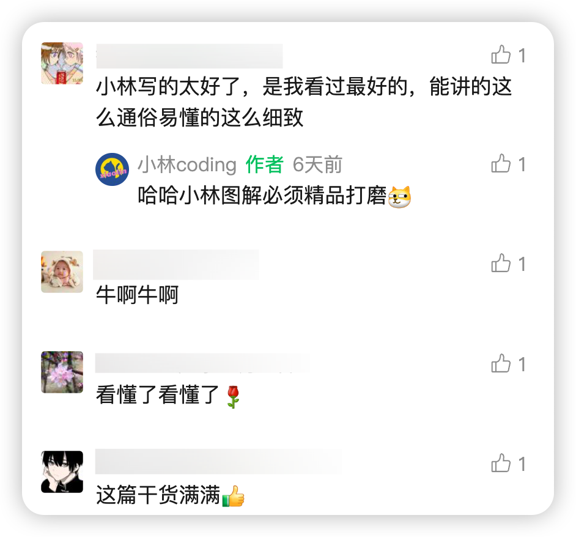
img
评论区还有也有同学在催更，让我讲讲 GraphRAG 和 LightRAG。
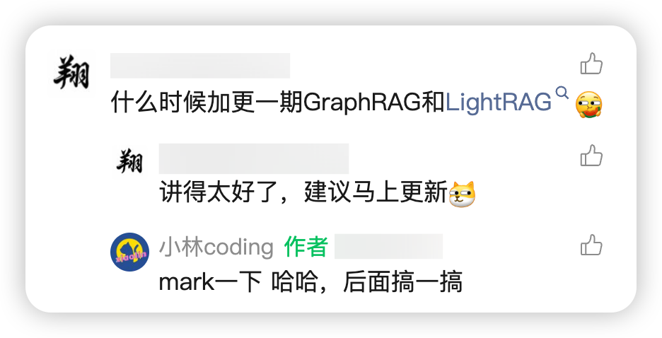
img
那么，今天这篇就是来还债的。
上一篇讲的是「传统 RAG」（也叫 Naive RAG），核心思路是：把文档切成块（Chunk）→ 做向量化（Embedding）→ 存入向量数据库 → 查询时基于语义相似度检索 Top-K 个文本块 → 塞给大模型生成答案。
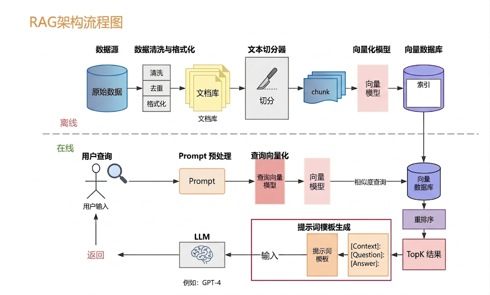
img
这套流程很经典，也解决了大模型「闭卷考试」的难题。
但这套方案在实际企业场景落地时，会遇到跨文档关系、全局归纳、更新和成本等问题。GraphRAG、LightRAG 等方法尝试用不同的结构和检索策略缓解其中一部分，并不是专门为所有这些问题共同设计的唯一答案。
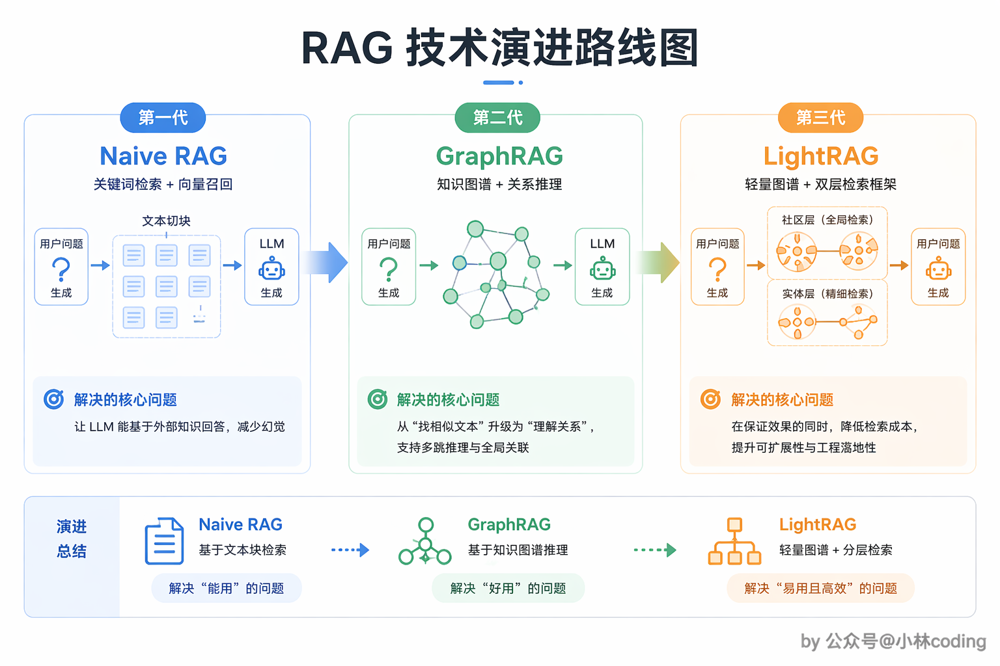
img
所以，这篇讲重点介绍下面这些内容，而且也都是我从大厂面经中收集到的面试题：
- 🌟传统 RAG 有什么痛点？
- 🌟什么是 GraphRAG？为什么会有 GraphRAG？
- 🌟GraphRAG 的工作流程是怎样的？
- GraphRAG 的难点是什么？
- 🌟GraphRAG 如何应对增量场景？
- 🌟什么是 LightRAG？为什么会有 LightRAG？
- 🌟LightRAG 的工作原理是怎样的？
- 🌟LightRAG 和 GraphRAG 有什么区别？
- 什么场景下需要 GraphRAG？
- 什么场景下需要 LightRAG？
整篇文章读完，你就能理解这两类图式 RAG 的常见设计、代价和评估方法，并能把自己的业务问题映射到选型条件上。
废话不多说，直接开讲。
1、传统 RAG 有什么痛点？
要理解 GraphRAG 为什么会出现，咱们得先搞清楚一个问题：传统 RAG 到底哪里不行？
很多同学读完上一篇 RAG 文章，可能会觉得：RAG 不是挺好的吗？能让大模型有「外挂知识库」，能减少幻觉，能回答私有数据的问题……听起来已经很够用了。
但问题是，「够用」和「能打」是两码事。你在 Demo 场景下跑一跑，确实没什么问题，但一旦真正拿到企业的复杂场景去用，你会发现传统 RAG 经常「表现得体面，但答得不对」。
下面我就用几个真实场景，带你感受一下传统 RAG 会卡在哪里。
痛点一：跨文档的「多跳推理」干不了
咱们先来看一个真实的业务场景。
假设你在一家跨国公司做风控，你问 RAG 系统这样一个问题：
「我们公司哪些欧洲供应商，在过去一年的安全审计中没通过，而且还在处理个人隐私数据（PII）？」
这个问题要想答对，得同时拿到三份文档里的信息：供应商档案（说明哪些供应商是欧洲的）、审计报告（说明哪些供应商没通过审计）、合同文档（说明哪些供应商在处理 PII 数据）。
但传统 RAG 干不了这件事。为什么？
因为传统 RAG 的检索逻辑是「找语义最相近的 Top-K 个文本块」。你问这个问题，它可能分别检索到：一些提到「欧洲供应商」的文本块、一些提到「安全审计」的文本块、一些提到「PII 处理」的文本块。
但它没有任何机制把这三个集合做「交集」。它只能把这些文本块一股脑扔给大模型，然后大模型自己也懵：我该怎么把这几份互相独立的资料关联起来？
这种需要「A 关联到 B，B 关联到 C，然后从 A 推到 C」的问题，就叫多跳推理（Multi-hop Reasoning）。传统 RAG 在这种场景下经常翻车，给出的答案要么不完整，要么干脆瞎编。
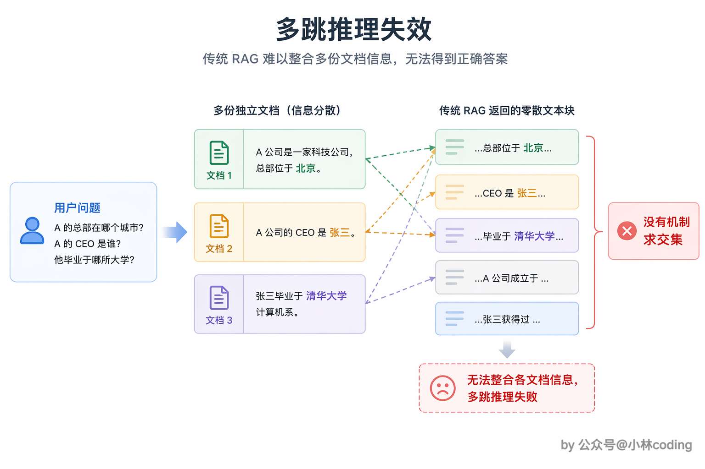
img
还有一个经典的例子，问「爱因斯坦的导师的导师是谁？」。这个问题得先找到「爱因斯坦的导师是谁」，然后再找到「那个导师的导师是谁」。当信息分散在多个文档里时，单次固定 Top-K 的传统 RAG 往往难以稳定完成这种链式推理；查询分解、迭代检索或结构化查询可以改变这个基线。
痛点二：全局性问题不容易直接回答
传统 RAG 的第二个局限，是对「全局性问题」缺少天然的聚合路径。
什么叫全局性问题？我举几个例子你就有感觉了。
比如你问「这本小说的主题思想是什么？」、「这份年度财报里，公司战略发生了哪些变化？」、「这个技术文档集合里，主要讨论的是哪几类方向？」这些问题有一个共同的特点：答案不在某一个文本块里，而是需要你通读所有文档、归纳总结才能得出来。
但传统 RAG 的常见实现主要按相似度找 Top-K 个文本块。可你想问的是「主题思想」，哪个文本块会直接写「本书主题思想是 XXX」？可能没有。因此固定 Top-K 可能只返回零散片段，大模型拿到的证据不足以稳定总结整体主题；多轮检索、长上下文或预计算摘要可以作为改进路径。
这类问题常被称为 Query-Focused Summarization（查询聚焦摘要）：它不仅需要检索，还需要覆盖、分组、归纳和证据校验。固定 Top-K 的传统 RAG 可能覆盖不足，但通过查询分解、迭代检索、长上下文或预计算摘要，也可以改善结果；因此不能绝对说它“天生处理不了”。
你想想，如果你在医院里问医生「过去一年咱们科室主要治疗的是哪几类病？」，医生要给出答案，得在脑子里把过去一年所有病例都过一遍、归归类。他不能只翻最上面的几份病例就告诉你答案吧？传统 RAG 干的就是这种「只翻最上面几份」的事情。
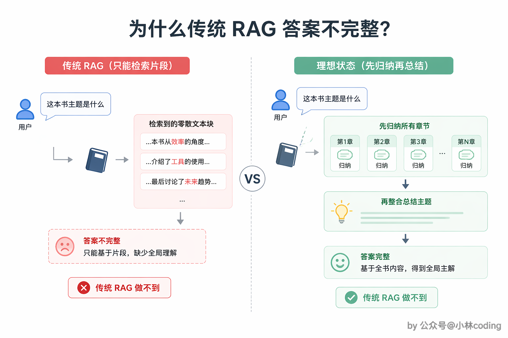
img
痛点三：切块带来的「语义断裂」
传统 RAG 的第三个痛点，藏在我们经常忽略的细节里：文档切块（Chunking）本身就在毁坏语义。
你想啊，传统 RAG 第一步就是把文档切成 500 字或者 1000 字的文本块。这种切法看起来没问题，但实际上会带来三个麻烦：
第一个麻烦，是「语义被切断了」。
一段完整的论述可能横跨了三个段落，你按字符数切，就可能把一个完整的观点拦腰斩开。检索时只召回了上半段，下半段没召回，答案自然就不完整。
第二个麻烦，是「实体之间的关系丢了」。
举个医疗场景的例子：原文里写的是「卡托普利属于 ACEI 类药物，但严重肾功能不全者禁用」。切块之后，「卡托普利是 ACEI 药物」可能在一个块里，「严重肾功能不全者禁用」可能在另一个块里。
这时候你问「高血压合并糖尿病患者首选哪几种 ACEI 药物？禁忌症是什么？」，传统 RAG 把这两个块都检索出来扔给大模型，大模型一看：诶，这里提到卡托普利，那里提到禁用……然后就可能给你来一句「卡托普利属于禁忌症药物」。
你看，因果关系被切块这一步给毁了。大模型拿到的是一堆「碎片化的事实」，但事实和事实之间原本的逻辑链条，没了。
第三个麻烦，是「检索噪声」。
因为切块之后每个块都是独立的，语义相似的块不一定就是你真正想要的块。比如你问「苹果的营收」，可能会检索到一堆讨论「苹果」（水果）的文本块，因为它们在语义上都很接近「苹果」这个词。这种噪声进来之后，大模型就容易被误导。
一张表总结传统 RAG 的三大痛点
把上面讲的三大痛点汇总一下：
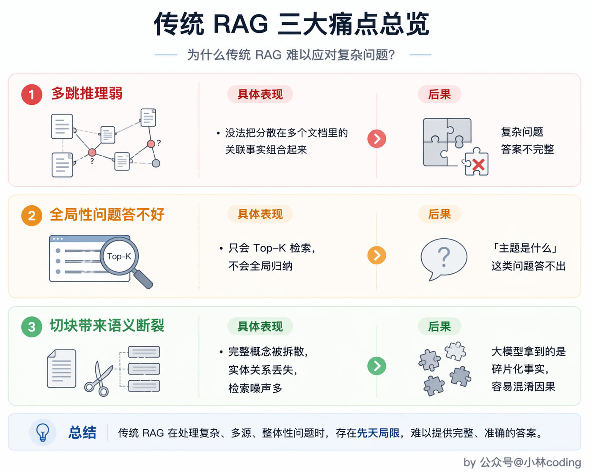
img
痛点背后的根本原因：它不「理解关系」
你如果仔细琢磨上面这三个痛点，会发现它们背后其实是同一个根本问题：
传统 RAG 做的是「找相似文本」，但企业真正需要的是「理解实体关系」。
向量检索这种方式，在「找长得像的句子」这件事上是很强的。但它没有机制去理解「这两个实体之间是什么关系」「这条信息和那条信息之间有没有因果链」。
所以，如果你的业务场景只是「找到某条具体事实」（比如问「我们公司年假有多少天」），传统 RAG 往往是合理的起点。但一旦涉及关系、多跳推理或全局归纳，就要比较它与查询分解、重排、图索引和摘要等方案的覆盖率、证据支持率与成本。
那问题来了，怎么让 RAG 真正「理解关系」呢？
答案就是：引入知识图谱。这也正是 GraphRAG 的核心思路。
我们下一节就来聊聊，GraphRAG 到底是怎么把「找相似文本」升级成「理解关系」的。
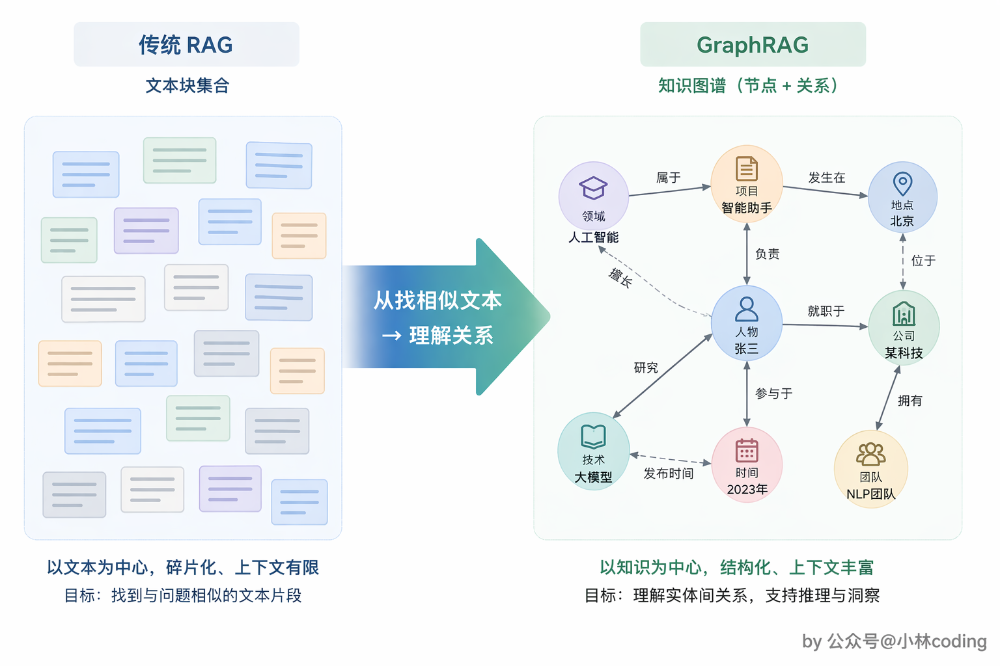
img
2、什么是 GraphRAG？为什么会有 GraphRAG？
先搞清楚 GraphRAG 到底是什么
GraphRAG 这个词，其实有两层含义。
狭义上，它指的是微软研究院在 2024 年 4 月发布的那篇论文和配套的开源项目。论文名字叫 《From Local to Global: A Graph RAG Approach to Query-Focused Summarization》（从局部到全局：一种面向查询聚焦摘要的图 RAG 方法），作者是 Darren Edge、Ha Trinh 等人。
广义上，它指的是所有基于知识图谱做 RAG 的方法，业界还有很多变种（比如 NebulaGraph、HippoRAG、阿里云的 AnalyticDB GraphRAG 等）。
咱们这篇文章主要讲的是微软这套 GraphRAG，因为它目前影响力最大，开源社区也最活跃，几乎是所有 GraphRAG 方案的参照对象。后面如果没特别说明，我说的 GraphRAG 都指微软这一套。
好，定义说清楚了，那 GraphRAG 到底在干嘛？
一句话概括：GraphRAG 就是用 LLM 把文档「读成一张知识图谱」，然后基于这张图谱来做检索和回答。
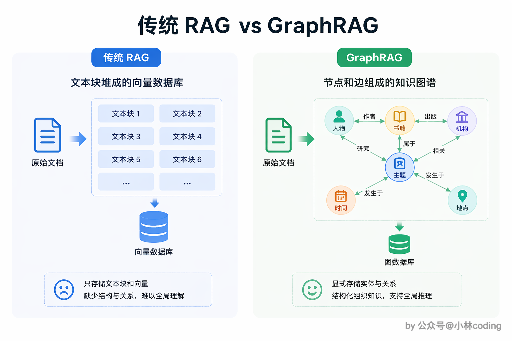
img
传统 RAG 和 GraphRAG 的核心差异是什么？
你如果把传统 RAG 和 GraphRAG 放一起对比，会发现它们的关键分歧就在于：知识是以什么形式存储的。
传统 RAG：通常以文本块及其索引/元数据为主要检索单元。块之间未必没有关系，但关系通常不会像图结构那样被显式建模和遍历。
GraphRAG：在文本块之外构建图（Graph）表示，把部分实体、关系或声明抽取为节点和边，再结合原文、向量索引或社区摘要检索。抽取结果是模型/规则推断，不天然等于事实。
我举个更具体的例子你就懂了。
假如你有一段文本：「张三在 2025 年创立了 A 公司，李四是 A 公司的 CTO，A 公司主要做自动驾驶业务。」
传统 RAG 会把这段话整体变成一个文本块，存到向量数据库里。你下次问「A 公司的 CTO 是谁？」，它靠语义相似度检索回这段话，然后让大模型去阅读理解，答出「李四」。
GraphRAG 则会从这段话里抽取出实体和关系，变成这样的结构化数据：
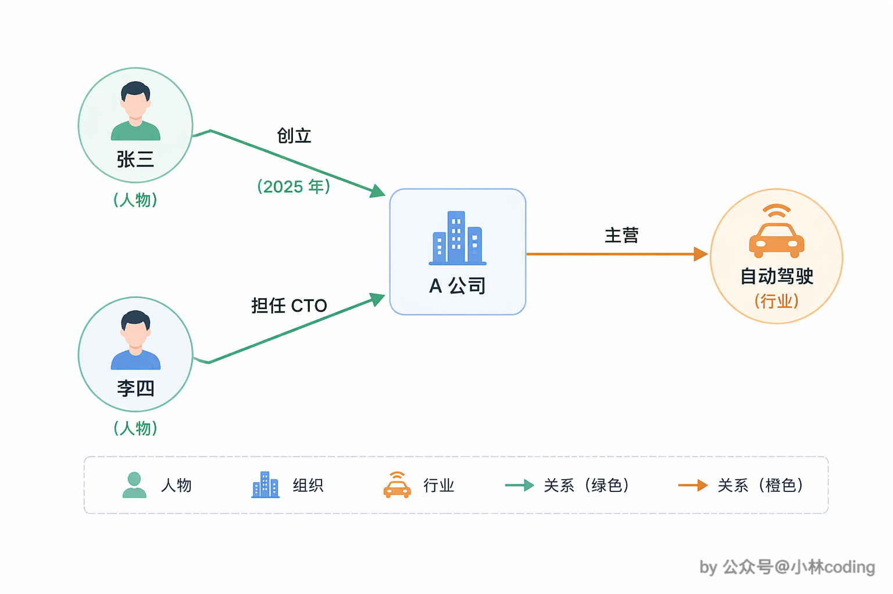
img
你看出差别了吗？GraphRAG 把部分文本证据表示成关系网，但原文仍是重要证据来源；节点和边是否正确、是否带来源、是否能追溯，取决于抽取、合并和存储设计。
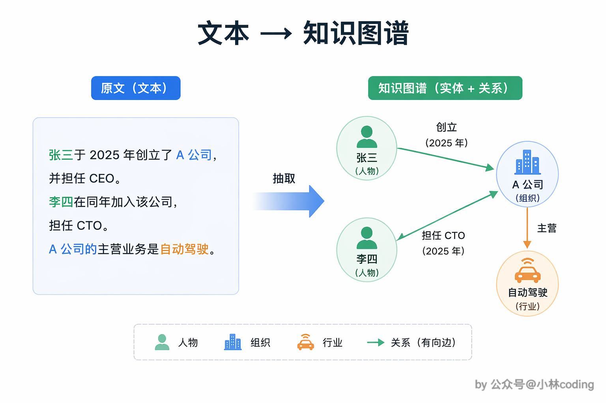
img
为什么要搞成图？这么做到底好在哪？
你可能会问：费这么大劲把文档变成图，这么做到底有什么好处？
其实就是为了解决咱们在第 1 章讲的那三个痛点。咱们一个一个来看。
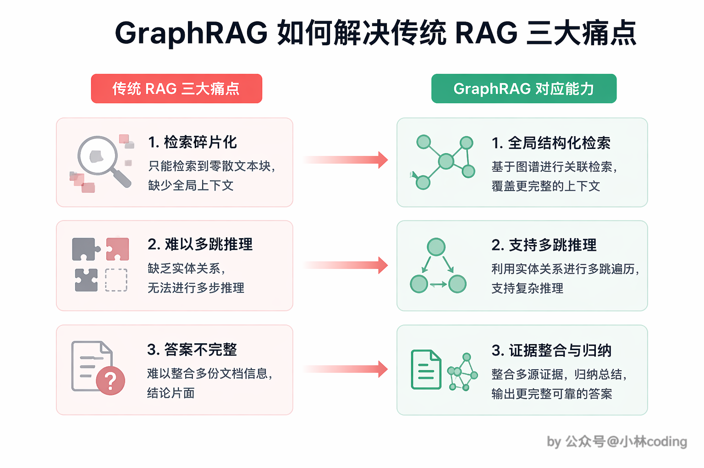
img
第一，多跳推理变得天然可行。
上一节咱们提到那个「欧洲供应商 + 审计没过 + 处理 PII 数据」的查询，传统 RAG 干不了，是因为它没法做「交集」。但在图上，这件事就变成了图遍历（Graph Traversal）：从「欧洲」这个节点出发，找它连着的所有「供应商」节点，再筛选出那些连着「审计未通过」的，再筛选出那些连着「PII 数据处理」的。
图结构适合表达和遍历多跳关系，但是否优于文本 RAG 取决于数据、图质量、查询路由、基线和评测设置；不要把某个数据集或版本的分数提升外推为固定收益。
第二，全局性问题能答了。
这是 GraphRAG 最核心的创新点，也是那篇论文标题里「From Local to Global」（从局部到全局）的来源。
微软的做法很巧妙：先把整张知识图谱通过社区检测算法（比如 Leiden 算法）划分成若干个「社区」，再用 LLM 为每个社区生成一份摘要。
什么叫社区？你可以把它理解成图里那些互相抱团、关系特别密切的一群节点。比如在《三国演义》这本书里，刘关张就是一个小社区、曹操集团是一个社区、诸葛亮周边的人物又是一个社区。每个社区内部的人物关系非常紧密，但社区之间的连接就比较稀疏。
一旦每个社区都有了摘要，系统可以把多个社区摘要作为全局归纳的中间证据；这会增加预计算成本，也可能丢失细节。传统 RAG 也可以通过分层摘要、批处理或其他检索策略回答部分全局问题，只是路径不同。
第三，实体和关系显式化，切块语义断裂的问题也缓解了。
因为 GraphRAG 可以把分散文本中的实体和关系连接起来，检索时有机会同时取到相关证据；但关系抽取、时间条件、否定和因果方向都可能出错，仍需保留原文来源、版本和领域校验，不能保证“不混淆”。
一个更形象的类比：从「图书馆找书」到「带导游游书店」
讲到这儿，你可能已经有感觉了，但咱们再用一个生活化的类比来强化一下理解。
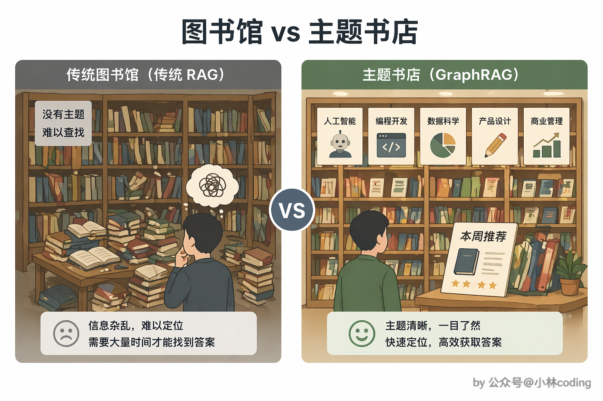
img
传统 RAG 像什么？像你去一个没有任何分类的图书馆找书。所有书都按出版日期顺序摆在一起，你想找「和气候变化有关的书」，只能靠关键字搜索，一本一本翻，找到几本就交给你。你想问「这个图书馆最近这几年主要收藏的是哪几个方向的书？」对不起，没人能回答你。
GraphRAG 像什么？像你进了一个带导游的主题书店。导游在你进门前已经把所有书按主题分好类了，每个主题区还贴了一张「这个主题区主要讨论什么」的概览海报。你要查具体的细节，导游带你精准定位；你要问宏观的主题，导游就把所有主题概览海报念给你听。
你说这两种体验能一样吗？
GraphRAG 的诞生背景
最后聊聊 GraphRAG 为什么在近年的 LLM 应用中受到关注。
其实「知识图谱」这个东西并不新鲜，早在 2012 年谷歌就提出过 Knowledge Graph 的概念。把知识图谱和 RAG 结合的想法也有人尝试过，但之前都不温不火，为什么？
因为之前构建知识图谱太痛苦了。传统的知识图谱构建，要么靠人工标注（超级贵），要么靠专门训练的 NLP 模型（效果一般）。提取实体、关系、消歧、对齐……每一步都是技术壁垒。
大模型可以辅助实体、关系和属性抽取，但仍需要 schema、去重、来源、人工抽查和回归评测；它不会因为几条 Prompt 就自动解决知识图谱质量问题。
可以把它理解为：LLM 降低了部分图构建的工程门槛，但也引入了 token 成本和抽取不确定性。
好，到这儿你应该对 GraphRAG 是什么、为什么会有它，有了一个整体的认识。但你可能还有疑问：它具体是怎么工作的？实体怎么抽？社区怎么划？查询怎么做？
下一章，我们就来拆解 GraphRAG 的完整工作流程。
3、GraphRAG 的工作流程是怎样的？
搞清楚了 GraphRAG 是什么，咱们这一节就来拆解它到底是怎么工作的。
常见的 GraphRAG 实现可以分为索引阶段（Indexing，离线/异步）和查询阶段（Query，在线）；不同版本还可能支持增量索引、动态检索或混合路径。关键边界是：索引阶段把原文转换为可检索表示，查询阶段仍要负责证据选择、上下文预算、生成和引用校验。
flowchart LR
A[原文与元数据] --> B[切块/解析]
B --> C[实体、关系或声明抽取]
C --> D[去重、消歧、来源绑定]
D --> E[图、向量、关键词或社区摘要索引]
Q[用户问题] --> R[路由/查询分解]
R --> S[局部图遍历、全局聚合或混合检索]
E --> S
S --> T[上下文裁剪与证据校验]
T --> U[模型生成]
U --> V[引用、事实性、延迟与成本评估]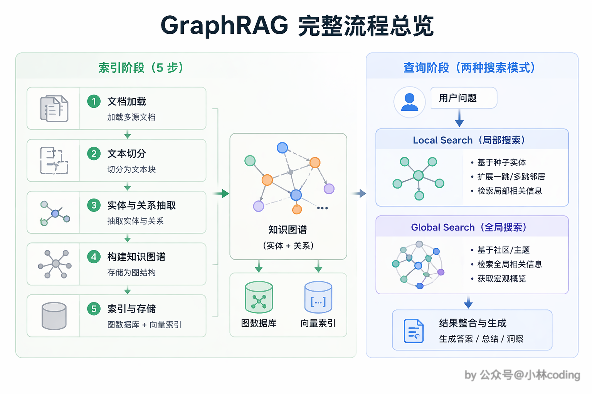
img
索引阶段做的事情：从原始文档抽取可检索的实体、关系或声明，构建索引和（可选的）社区摘要。这个阶段通常需要较多计算和模型调用，但是否全量离线、是否增量更新取决于实现。
查询阶段做的事情：根据问题选择局部、全局或混合检索，组装带来源的证据，再交给 LLM 生成答案；图检索速度不一定“快速”，需要实测。
咱们一个一个阶段来看。
索引阶段：5 步把文档变成知识图谱
以一类常见的 GraphRAG pipeline 为例，可以拆成若干步骤。下面的步骤和数量是教学抽象，具体实现可能合并、删减或增加阶段。
第 1 步：文档切块（Text Chunking）
把文档按 tokenizer、结构和任务切成文本单元（Text Unit）；1200 字只是示例，实际应通过检索召回、抽取质量和成本评测选择。
切块可以控制模型输入、提高并行度和定位来源，但过小会割裂关系，过大会增加成本；并行还要考虑速率限制、顺序、重试和去重。
第 2 步：实体与关系提取（Entity & Relationship Extraction）
这一步是图式 RAG 的关键步骤之一：让模型或规则从文本单元中抽取实体（Entity）、关系（Relationship）和可选的声明/时间属性。
GraphRAG 用的是一个专门设计的 Prompt，大致长这样（简化版）：
你是一个实体关系抽取助手。请从下面的文本中：
1. 识别所有的实体，每个实体给出：
- entity_name：实体名（大写）
- entity_type：类型（比如 [人物, 组织, 地点, 事件]）
- entity_description：实体的综合描述
2. 识别所有实体之间的关系，每对关系给出：
- source_entity：源实体
- target_entity：目标实体
- relationship_description：关系的描述
- relationship_strength：关系强度（1-10 的数字）
文本内容：
{input_text}
请按以下格式输出：
("entity"|实体名|类型|描述)
("relationship"|源|目标|描述|强度)
LLM 读完一段「刘备和关羽、张飞在桃园结义」的文本，会输出类似这样的结构化内容：
("entity"|刘备|人物|蜀汉的建立者，三国时期重要人物)
("entity"|关羽|人物|刘备的义弟，以忠义闻名)
("entity"|张飞|人物|刘备的义弟，勇猛善战)
("relationship"|刘备|关羽|桃园结义为兄弟，关系极为紧密|10)
("relationship"|刘备|张飞|桃园结义为兄弟，关系极为紧密|10)
("relationship"|关羽|张飞|桃园结义为兄弟|10)
这一步跑完，所有文本块都会产出一堆实体节点和关系边。
但注意，这里会有一个麻烦：重复和歧义。比如刘备可能在文本里被叫做「玄德」「先主」「刘皇叔」，LLM 抽取的时候可能把它们抽成了三个不同的实体。这个问题 GraphRAG 后面会通过「实体合并」和「社区检测」来一定程度上缓解，但不能完全解决。这也是我们第 4 章要讲的难点之一。
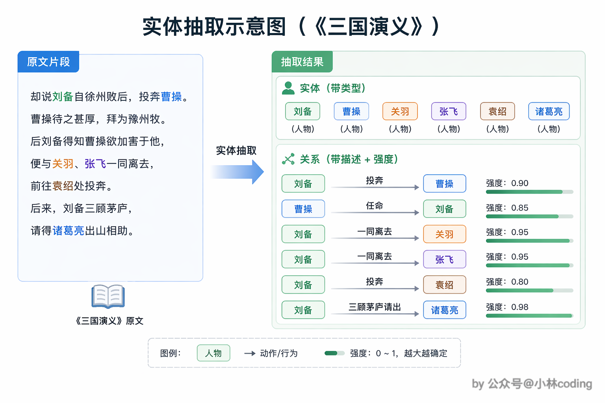
img
第 3 步：生成实体/关系摘要（Summarization）
这一步容易被忽略，但其实很关键。
同一个实体（比如「刘备」）会在好多个文本块里被反复抽取，每次抽取的描述可能都不一样：「蜀汉的建立者」「关羽的义兄」「汉室宗亲」……
常见实现会把同一候选实体/关系的描述聚合，再生成或计算综合表示；具体是否逐实体调用 LLM、是否用规则/嵌入合并，取决于 pipeline。
这一步做完，每个实体节点就有了一段「综合描述」，这段描述会被向量化后存入向量数据库，供后面的 Local Search 用。
第 4 步：社区检测（Community Detection）
到这一步，你手里已经有了一张完整的知识图谱，里面的节点是实体，边是关系。但这张图可能有成千上万个节点，怎么组织？
一些 GraphRAG 实现使用 Leiden 等社区检测算法；算法、分辨率、随机种子和层级结构都会影响结果，不能笼统断言比其他算法更稳定。
Leiden 算法会把图谱划分成多个层级的社区，这是它最有意思的地方。
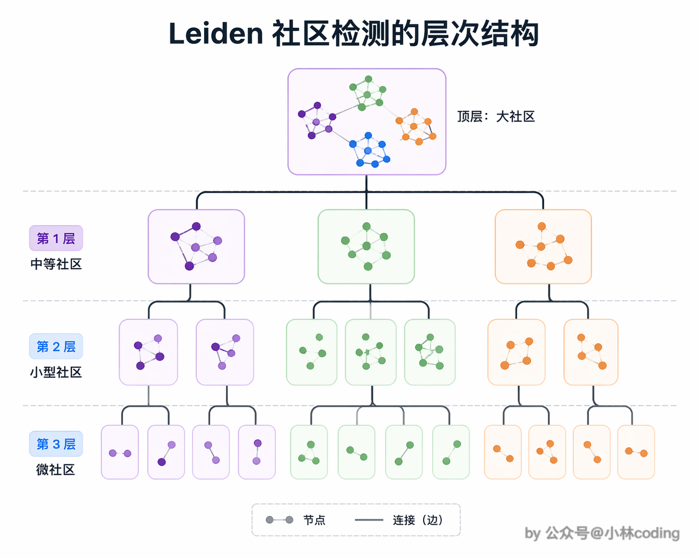
img
咱们还是拿《三国演义》来说。
- 最粗的那一层（叫 Level 0）可能把整张图划成五到十个大社区，比如「曹魏集团」「蜀汉集团」「东吴集团」「黄巾起义相关」这种；
- 再往下一层（Level 1），每个大社区又会被拆得更细，比如「蜀汉集团」里会分出「刘关张小团体」「诸葛亮周边」「五虎上将」等等；
- 再继续往下 Level 2、Level 3，一路细分下去，直到社区没法再拆为止。
这种层次化划分可以支持不同粒度的全局检索；查询路由不一定只按“宏观/具体”二分，还要结合问题、预算和证据覆盖率。
第 5 步：生成社区摘要（Community Reports）
某些实现会为社区生成摘要报告（Community Report）；它是可选的预计算资产，生成前后都应保留来源和版本。
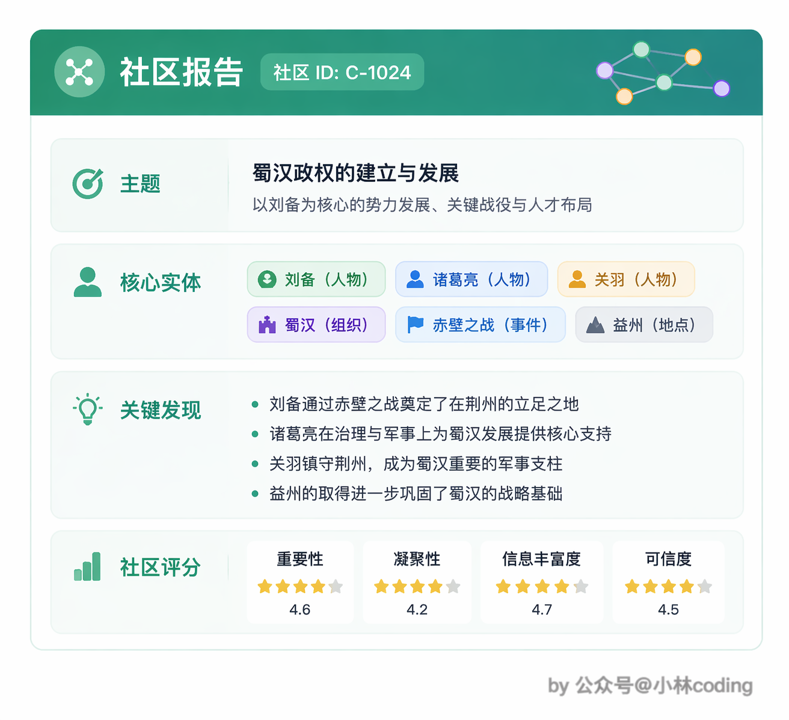
img
报告可以由 LLM 根据社区内的实体、关系和声明生成，也可以由规则/统计聚合。输入不能无限“整包”塞入模型，需要分层、截断和来源映射；评分字段也属于实现设计，不应当作客观影响力。
这些社区报告就是 GraphRAG 回答全局性问题的核心资产。你可以把它们理解成图书馆里每个主题区前面贴的那张「本主题概览海报」。
索引阶段通常需要多轮模型调用，数量取决于文本单元、批处理、合并策略、社区数和是否启用声明抽取；成本应按真实 tokenizer、模型价格、缓存和并发配置测量，不能由“100 万 token”直接推出固定调用次数。
查询阶段：两种搜索模式各司其职
索引后通常会得到实体/关系、原文引用、可选社区和报告。常见查询模式包括 Local Search、Global Search，某些版本还会提供混合或动态检索；名称和实现随版本变化。
（部分实现还会提供动态或混合检索模式；具体名称和行为应按目标版本文档核对。）
模式一：Local Search（本地搜索）
适用场景：用户问的是关于某个具体实体的问题。比如「诸葛亮都有哪些著名的计策？」「A 公司的 CTO 是谁？」。
工作流程：
- 定位入口实体：先用问题的向量，在所有实体节点的向量索引里做相似度搜索，找到最相关的几个实体。比如问诸葛亮，就先定位到「诸葛亮」这个节点
- 顺藤摸瓜扩展：从入口实体出发，沿着图的边扩展，找到相关的邻居实体、关系、原始文本块、所属社区报告
- 组装上下文：把找到的这些信息整合成一段上下文（Context）
- 交给 LLM 生成答案
你看，Local Search 的核心是「从一个点扩散到它的邻居」，很适合回答那些「围绕某个具体对象」的问题。
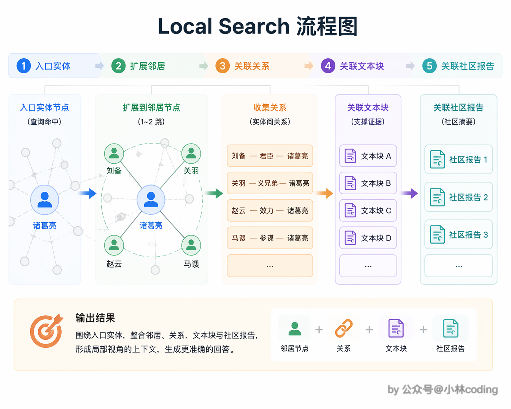
img
模式二：Global Search（全局搜索）
适用场景：用户问的是全局性、宏观性的问题。比如「整本书讲了哪几派势力的斗争？」「这份报告的主要结论是什么？」。
工作流程：GraphRAG 这里用的是一个Map-Reduce的策略：
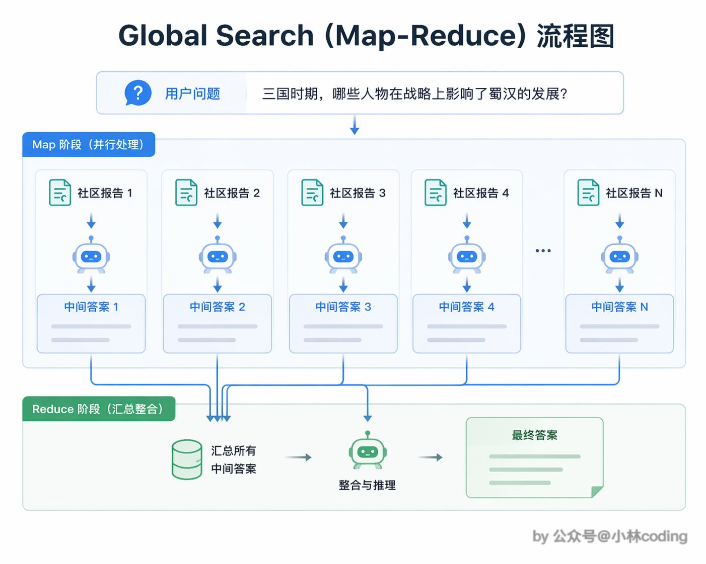
- Map 阶段：把某个层级（比如 Level 1）的所有社区报告都拿出来，分成好多批，对每一批都让 LLM 生成一个「中间答案」，并给每个观点打一个「重要性评分」
- Reduce 阶段：把所有中间答案里的观点汇总，按评分排序，保留最重要的那些，最后让 LLM 合并成一个完整的最终答案
这个流程听起来有点绕，但它的本质是：把全局性问题拆分成多个社区内部的子问题并行解答，最后再汇总。
打个比方，你问班长「咱们班这学期整体学习情况怎么样？」，班长不会去看每个同学的每张考卷，而是会先找每个小组的组长，让他们每人给一份自己组的总结，然后班长再把所有组的总结汇到一块儿给你看。GraphRAG 的 Global Search 干的就是这事儿。
为什么 Global Search 可能特别费钱？
Map 阶段可能需要处理大量相关社区报告；社区数量、批大小、模型调用次数和上下文预算取决于数据与实现，可能显著增加延迟和成本。
一种常见优化是动态选择或分层筛选社区：先估计相关性，再展开必要子树，以减少模型调用；收益必须按数据集、阈值和版本实测。
一张图总结 GraphRAG 的完整工作流程
最后咱们把整个流程串起来：
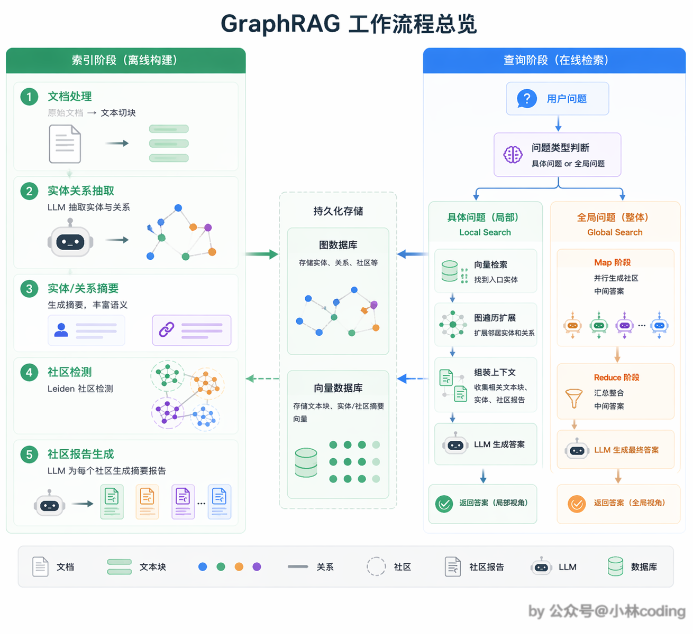
img
索引阶段（离线，一次性跑完）：
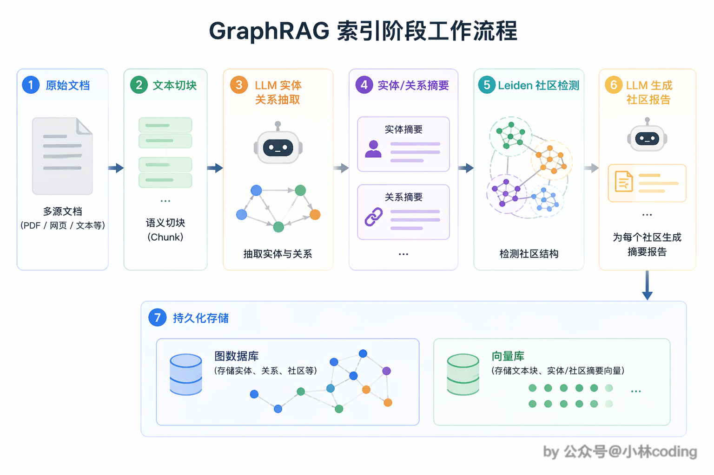
img
查询阶段（在线，每次查询都跑）：
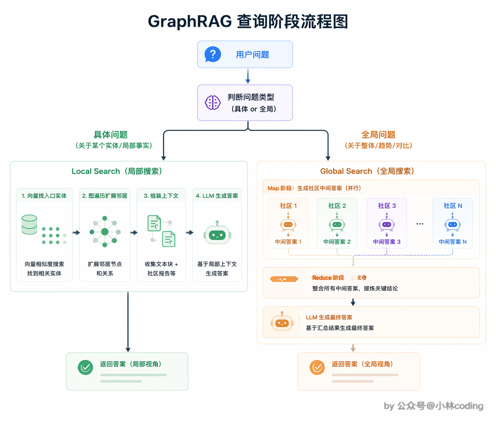
img
到这儿你应该已经把 GraphRAG 的整个流程搞清楚了。但你可能也注意到一个问题：这套方案虽然强大，但步骤多、调用贵、流程复杂。
GraphRAG 在实际落地的时候，到底会撞上哪些坑？下一节咱们来盘一盘。
4、GraphRAG 的难点是什么？
读到这儿，你可能会觉得 GraphRAG 好像挺完美的，能解决传统 RAG 的痛点，又有清晰的流程。
但这里我得给你泼一盆冷水。
GraphRAG 可能带来更丰富的关系和全局表示，但代价是索引、更新、存储和查询复杂度上升；是否值得取决于业务问题和基线评测，不能据此断言团队都会退回传统 RAG。
这一节咱们就把 GraphRAG 落地时常见的四大难点盘一盘。搞懂这些难点，你也就能理解为什么后来会出现 LightRAG 这种「轻量化改良方案」。
难点一：索引成本高得吓人（Token 焚烧炉）
GraphRAG 第一个也是最让人肉疼的难点，就是构建成本。
传统 RAG 的索引通常是切片 → 嵌入 → 存储，但实际成本取决于嵌入模型、解析、重排、存储和更新频率，不能用固定的每百万 token 价格概括。
GraphRAG 的索引通常需要更多模型调用，因此可能成为成本主要来源；是否“昂贵”要按 pipeline、模型、缓存和并发实测。
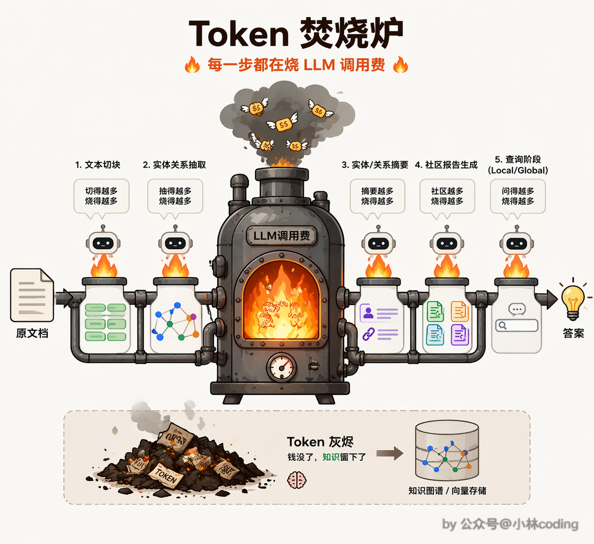
img
常见 pipeline 会在文本单元、实体/关系聚合、社区报告或声明抽取阶段调用模型，但可以批处理、缓存、规则化或省略某些阶段；调用结构不是固定模板。
因此输入输出 token 可能明显高于原文，但倍数高度依赖分块、重叠、提示模板、批处理和摘要策略，不能给出通用的十倍/几十倍结论。
成本应按项目实际配置估算：先统计文档 tokenizer、模型调用次数/输入输出 token、嵌入与存储、并发/重试，再乘以当前价格并加入更新与人工校验成本。Lazy/动态构建等方案可以把部分计算移到查询阶段，但会交换在线延迟、成本和结果稳定性，不能直接套用固定百分比。
难点二：实体消歧，踩过的人都知道多痛
GraphRAG 第二个难点，也是很多人没踩坑之前意识不到的杀手级问题，就是实体消歧（Entity Disambiguation）。
什么叫实体消歧？我举几个例子你就明白了。
你看「IBM」「国际商业机器」「IBM Corp.」「Big Blue」，这四个名字其实指的都是同一家公司，人一看就知道；但机器不知道。再比如「苹果」「苹果公司」「Apple」「Apple Inc.」，前三个在不同语境下既可能指水果也可能指公司，你得结合上下文去判断。还有一些场景更麻烦，比如「张三」这个名字，在几百篇文档里可能对应的根本就不是同一个人。
LLM 做实体抽取可能不一致。同一个实体在不同文档里有别名、缩写或不同上下文，若没有规范化和实体链接，就可能变成多个候选节点。
这种情况下会发生什么？
- 第一，可能出现近重复节点，导致图膨胀和召回分散。
- 第二，关系可能碎片化；如果别名没有合并，查询可能漏掉一部分证据，但召回策略和原文索引也可能补回它们。
- 第三，错误会沿下游传播。实体或关系抽错会影响社区、摘要和答案，因此要保留来源、置信度、版本和纠错入口；“指数级放大”不是必然的数学结论。
这个问题没有一个适用于所有领域的统一解法。
生产环境通常会叠加好几层策略：字符串编辑距离（处理拼写差异）、向量相似度（处理语义相似）、LLM 判别合并（处理复杂情况）、甚至还要人工兜底。但每一层都会增加索引成本和延迟。
有位资深工程师说过一句话我觉得特别扎心：「实体碎片化的知识图谱，比没有知识图谱更糟糕，因为它制造了一种虚假的完整感」。你以为图已经建好了，实际上里面全是断裂的关系，但你从外面根本看不出来。
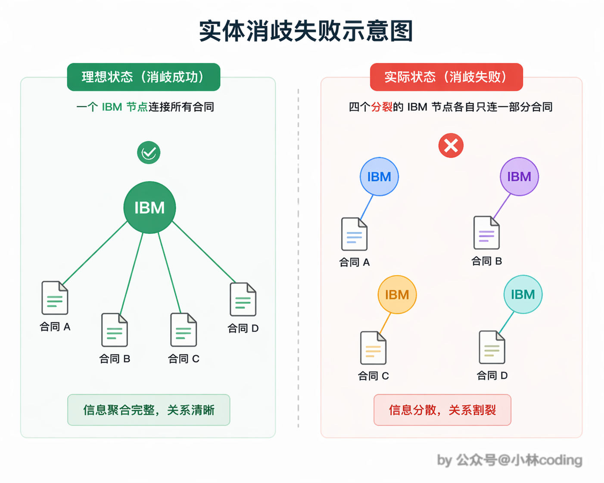
img
难点三：查询延迟，尤其是 Global Search
GraphRAG 的第三个难点，是查询延迟。
传统 RAG 的 ANN（近似最近邻）检索通常比多轮图查询简单，但端到端延迟仍取决于索引、重排、模型首 token、网络和负载，不能用固定毫秒/秒数概括。
GraphRAG 还要承担图遍历、上下文组装和可能的多轮模型调用，因此延迟路径更复杂。
Local Search 通常比全局聚合简单，但具体延迟取决于邻居深度、候选数、存储和模型服务，应通过 p50/p95 实测。
Global Search 的路径更长。一种实现会采用 Map-Reduce：把若干社区报告分批交给模型生成中间答案，再由 Reduce 阶段汇总；社区数、批次和是否并行取决于实现，并不必然等于同数目的模型调用。
这种“先扇出再汇聚”的结构可能造成较高延迟，尤其在限流或串行 Reduce 时；是否适合实时交互要看 p95、流式体验、问题类型和业务 SLO，不能用固定 10 秒到 1 分钟或“完全不可能”概括。
你想啊，你问一个 ChatGPT，要等一分钟才出答案，谁能忍？
可用动态社区选择、候选截断、并发和缓存降低开销；收益和相对延迟要按版本、语料和负载实测。
难点四：增量更新，牵一发而动全身
这是 GraphRAG 最要命的一个难点，我单独放在下一节展开讲。
先给你一个直观感受：在传统 RAG 里，新增一份文档，就是把它切片、向量化、upsert 进向量库，完事。
但在 GraphRAG 里，事情就没那么简单了。一份新文档进来，里面可能会冒出一个实体，它其实和图里已有的某个老节点是同一个东西，但名字不一样，于是实体消歧问题又来了。再比如新文档里抽出一堆关系，这些关系一加进图，原来的社区划分就可能过时了；社区一变，你之前花大价钱让 LLM 生成的那些社区摘要就全部跟着失效；等摘要重建完，整张图的向量索引还得跟着同步更新一遍。
这种数据互联性会让部分增量更新比纯向量 upsert 复杂，但可以通过受影响子图、版本化摘要、延迟合并或定期重建处理；是否高效取决于实现和更新模式。
增量更新的具体难在哪、业界有哪些应对方案，咱们下一章专门聊。
小结：GraphRAG 是「昂贵的妥协」
咱们把 GraphRAG 的四大难点汇总一下：
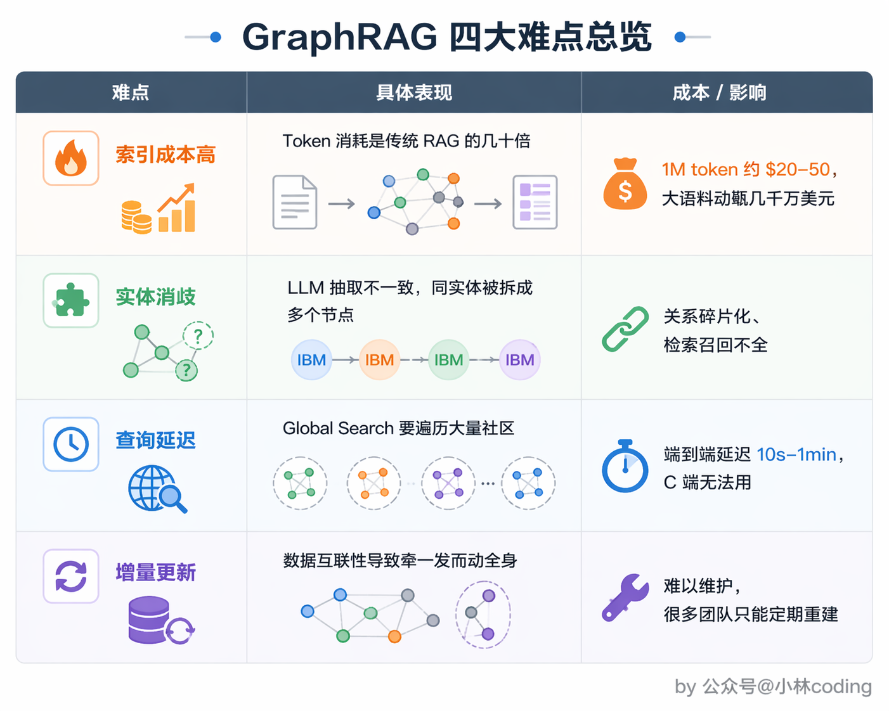
img
| 难点 | 具体表现 | 需要测量/治理的影响 |
|---|---|---|
| 索引成本高 | 抽取、聚合和摘要可能引入多轮模型调用 | 输入/输出 token、并发、缓存、嵌入、存储和人工校验 |
| 实体消歧 | LLM 抽取不一致，同实体被拆成多个节点 | 关系碎片化、检索召回不全 |
| 查询延迟 | Global Search 可能扇出多个社区并再汇总 | p50/p95、流式体验、并发和模型限流 |
| 增量更新 | 数据互联性导致牵一发而动全身 | 难以维护，很多团队只能定期重建 |
看到这儿你应该理解了，GraphRAG 不是银弹，它是一个「在特定场景下不得不接受的昂贵妥协」。
如果你的业务对成本敏感、对实时性要求高、数据还需要频繁更新，那原生的 GraphRAG 可能并不适合你。这也正是后面 LightRAG 这类「轻量化方案」的价值所在，它们在精度上做一些妥协，换来更低的成本和更好的增量支持。
下一节，咱们就聚焦 GraphRAG 四大难点中最棘手的那个：增量更新。看看业界是怎么应对的。
5、GraphRAG 如何应对增量场景？
这一节咱们单独拎出来讲增量更新，因为这是 GraphRAG 落地的时候最容易被低估、也是最让人头大的问题。
为什么增量更新对 GraphRAG 来说这么难？
在传统 RAG 里，你加一份新文档是什么流程？
通常更直接：把新文档解析、切片、向量化并 upsert 到向量库；耗时、删除、版本和权限同步仍需设计，不能承诺几分钟或零副作用。
在 GraphRAG 里，加一份新文档是什么流程？
GraphRAG 的更新路径更复杂：因为图、原文索引、实体合并和可选社区摘要之间存在依赖，新文档可能触发一串级联操作：
第一步的麻烦，新文档里的实体可能和现有图谱里的实体需要合并。
比如老图谱里已经有了「IBM」这个节点，新文档里抽出来的叫「国际商业机器」。你需要识别出它们是同一个实体，然后合并。这就是增量版本的实体消歧问题，不仅要做一次性消歧，还要在每次增量时都做一遍。
第二步的麻烦，新的实体和关系会改变图的结构。
图结构变了，意味着什么？原来的社区划分可能过时了。可能新加入的一堆实体本应该属于某个新社区，或者老社区的边界发生了变化。
第三步的麻烦，社区一变，下游的社区摘要就全失效了。
你之前花了大价钱让 LLM 给每个社区生成的那些社区报告，现在可能和实际的图结构对不上了。要不要重新生成？重新生成就意味着又一次 Token 焚烧。
第四步的麻烦，向量索引也要同步更新。
新的实体、关系、社区摘要都要重新向量化，存进向量库。
因此，传统 RAG 的简单 upsert 在 GraphRAG 中通常需要额外的一致性、版本和重建策略。
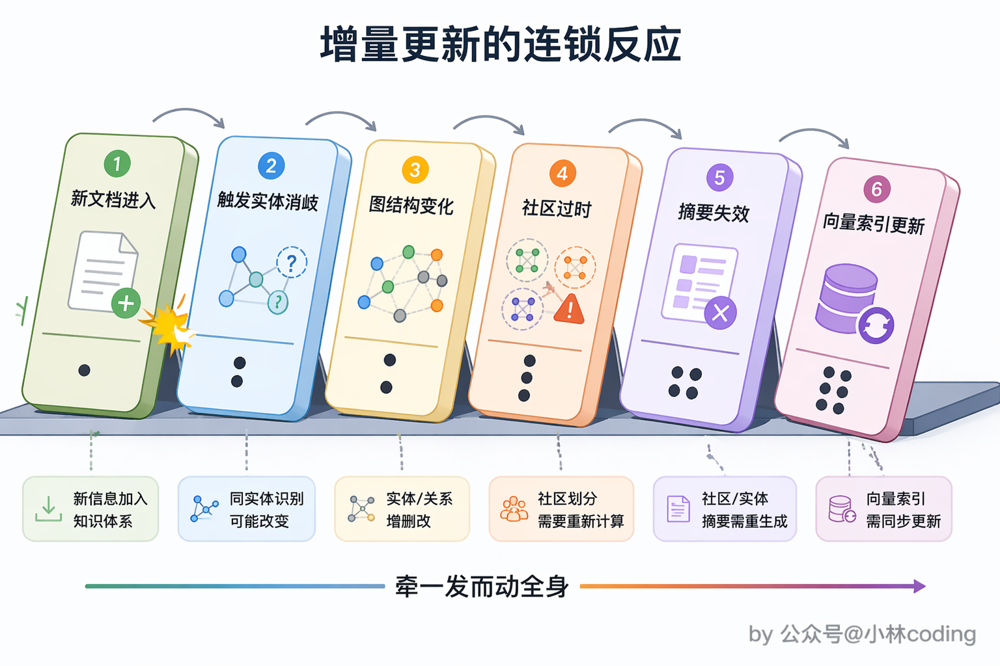
img
时间敏感场景的效果高度依赖索引新鲜度、版本过滤、冲突处理和基线；除非明确给出论文、数据集和配置，否则不要引用固定百分点来证明 GraphRAG 必然落后。
业界应对增量问题的几种思路
这个问题这么难，业界有没有办法？有，但每种办法都是有代价的妥协。下面几种主流思路，你可以根据自己的业务场景挑。
思路一：简单粗暴，定期全量重建
最土但最省心的办法：每天、每周、或者每月定时把所有文档重新跑一遍 GraphRAG 索引。
优点：实现简单，一致性好，图谱永远是新鲜的。
缺点：贵且慢。全量重建的成本与文档规模、模型、缓存、并发和更新频率相关，还要处理双索引切换、回滚和读写一致性；应以预算模型实算。
适合什么场景？文档更新频率低 + 数据量不大 + 对实时性不敏感的场景，比如公司年度法规库、历史档案库。
思路二：增量索引（Incremental Indexing）
微软 GraphRAG 的后续版本（以及 Fast GraphRAG 这类改良方案）都支持了增量索引，只处理新增的文档，把新抽出的实体和关系追加到已有图上。
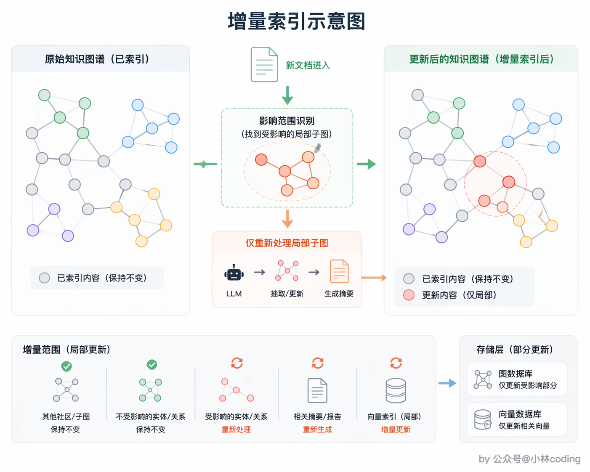
img
核心流程是这样的：先对新文档做一次实体和关系抽取（注意，只处理新的，老文档完全不碰），然后把抽出来的新实体和图里的老实体做消歧合并（这一步也叫 upsert，实现上一般会用字符串编辑距离加上向量相似度组合判断），合并完之后把新关系追加到图上。这时候关键的一步来了：系统要判断哪些社区受到了这次更新的影响（通常是通过图算法识别受影响的子图），然后只对这些受影响的社区重新做一次检测和摘要，没受影响的部分保持原样不动。
优点：在受影响范围较小且实现支持增量时，可以避免每次全量重建；具体速度和质量要用目标数据、模型和硬件基准测试。
缺点：精度会有损失。因为社区划分本质是一个全局优化问题，你只重做局部社区，全局的社区划分就不一定是最优的。时间长了，图谱的质量会慢慢「漂移」，需要阶段性做一次全量重建来「校准」。
思路三：混合策略，小增量 + 周期性全量
一种常见做法是把日常增量和周期性全量结合起来：日常更新减少延迟，周期性重建校准实体、社区和摘要漂移。周期应按新鲜度、成本和质量指标决定，不是固定每月。
这种方式的优点就是成本和质量的平衡最好，缺点嘛，就是你得同时维护两套流程。
思路四：时间分区（Temporal Partitioning）
如果你的数据有明显的时间属性（比如新闻、月度报告、季度财报），还有一种做法是按时间段分开建图：2025 Q1 一张图，Q2 一张图，Q3 又是一张图。
查询的时候，要么指定时间段查对应的图，要么跨图联邦查询再聚合。
优点：每张图相对小、更新隔离性好、老数据不受新数据影响。
缺点：跨时间段的查询要专门做联邦策略，图和图之间的实体也需要做全局对齐。
思路五：延迟实体合并 + 最终一致性
有些团队的做法更激进：索引时不做消歧，只把所有实体直接加进去，哪怕同一个 IBM 有四个节点也无所谓。然后查询时再做合并，或者异步离线跑消歧任务。
优点：索引极快，增量几乎零成本。
缺点：查询时可能要做更多的聚合和去重，查询延迟会变高。而且在没来得及异步合并之前，查询结果可能会漏召回。
GraphRAG 的「增量困境」其实推动了 LightRAG 的诞生
看到这儿你可能已经有感觉了：GraphRAG 的增量问题，本质上是「社区摘要」这个设计带来的。
之所以一动就牵一发而动全身，就是因为有「社区→社区摘要」这条依赖链。如果没有社区摘要，增量就只需要在图上加几个节点和边，就像传统 RAG 里 upsert 几个向量一样简单。
那问题来了：能不能干脆不要社区摘要，用别的方式实现全局查询呢？
这就是我们下一章要讲的 LightRAG 给出的答案。
LightRAG 的一种核心设计是减少对预计算社区/社区摘要的依赖，使用双层检索来支持局部和主题级查询；具体 pipeline 与版本实现可能不同。
这样可能降低预计算成本，并简化部分增量路径，但 token、延迟和质量收益取决于模型、配置、数据和基线；新文档仍需实体合并、删除、冲突和索引一致性处理。
当然，这么做也是有代价的，代价是什么？下一章我们就来揭晓。
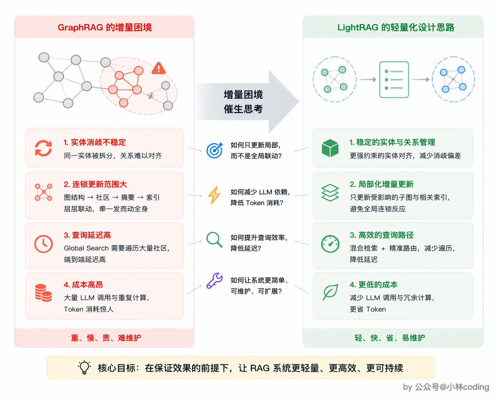
img
6、什么是 LightRAG？为什么会有 LightRAG？
讲完了 GraphRAG 的痛点和增量困境，咱们这一节就该聊聊业界给出的轻量化答案：LightRAG。
LightRAG 的身世背景
LightRAG 是一篇公开论文及其开源实现的名称；论文作者、发布日期、版本和收录状态应以论文/仓库元数据为准，本文重点放在方法边界而非时间线。
论文标题叫 《LightRAG: Simple and Fast Retrieval-Augmented Generation》（LightRAG：简洁快速的检索增强生成），名字里这两个词，「Simple」（简洁）和「Fast」（快），其实就是它设计哲学的概括。
论文中的基准结果只适用于其数据集、模型和实现配置；“GraphRAG 的高性价比改良版”、社区热度和 Star 数不是技术定义，也不应作为生产选型证据。
你可以这么理解 LightRAG 的定位：
可以把 LightRAG 理解为一类减少预计算和社区摘要依赖的图增强 RAG 方法，它可以作为候选方案，但不是所有 GraphRAG 场景的替代品。
它用更轻的结构换取成本、速度、增量维护上的潜在优势，同时可能牺牲全局预计算、实体消歧或时效冲突处理能力；“做到极致”需要用同一数据和 SLO 验证。
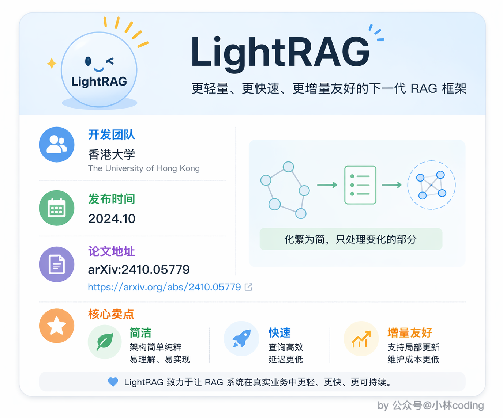
img
为什么会有 LightRAG？直接原因就是 GraphRAG 的痛
这个问题其实我们前面几章已经铺垫得差不多了。LightRAG 作者在论文里也很直白地点出了他们做这个工作的动机，就是冲着 GraphRAG 的几个关键问题去的。
论文讨论了部分图式 RAG 在动态更新和全局查询成本上的局限；这是特定基线和配置下的问题，不等于所有 GraphRAG 实现都只能全量重建或遍历所有社区。
LightRAG 的目标，就是同时解决这两个问题。而它解决问题的方式，是引入了三个核心创新。
LightRAG 的三个核心创新
创新一：图增强的文本索引（Graph-Enhanced Text Indexing）
LightRAG 和 GraphRAG 一样，也是用 LLM 从文档里抽实体和关系，构建知识图谱。但它做得更轻。
轻的一种体现是不在索引阶段构建社区摘要，而保留实体/关系及其检索表示；具体实现仍可能有摘要、全文索引或其他辅助结构。
你可以把 LightRAG 的图理解成 GraphRAG 去掉「社区那层」的轻量版本：
| GraphRAG | LightRAG | |
|---|---|---|
| 实体抽取 | ✅ | ✅ |
| 关系抽取 | ✅ | ✅ |
| 实体/关系摘要 | ✅ | ✅（更轻量） |
| 社区检测（Leiden） | ✅ | ❌ |
| 社区摘要 | ✅ | ❌ |
省略这些阶段可能显著减少模型调用，但比例不能脱离文本规模、批处理和模型配置引用。
创新二：双层检索范式（Dual-Level Retrieval）
这是 LightRAG 最亮的创新点。你可能会问：不做社区摘要了，那全局性问题怎么答？
LightRAG 的做法是：不用提前做全局聚合，而是在查询时把查询本身拆成两层关键词，分别做检索。
举个例子你就明白了。如果你问「卡托普利的禁忌症是什么？」，低层关键词就是「卡托普利」「禁忌症」这种具体的实体和术语，它关注的是细节。而如果你问「国际贸易如何影响全球经济稳定？」，高层关键词则是「国际贸易」「全球经济稳定」「经济影响」这种抽象的主题和概念，它关注的是更宏观的东西。
拿到这两组关键词之后，LightRAG 就兵分两路。
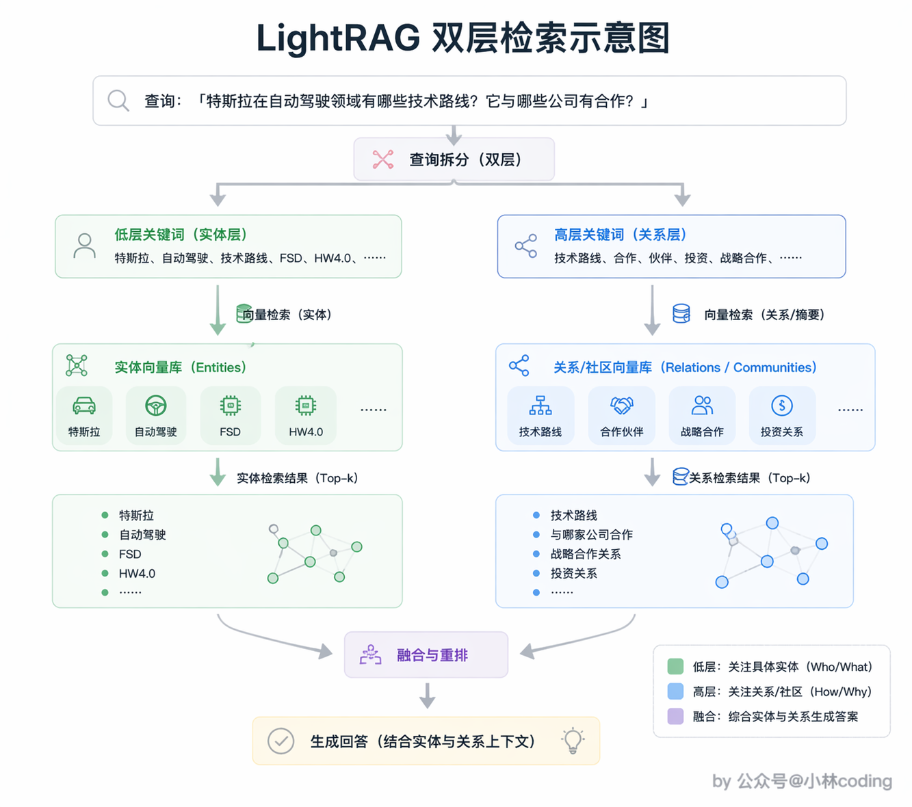
img
一路用低层关键词去向量库里找相关的实体，另一路用高层关键词去向量库里找相关的关系（也就是边的描述）。一个找「点」，一个找「线」，两种信息合起来组装成上下文，最后让 LLM 生成答案。
这种双层检索可能把一部分全局聚合成本从离线移到查询时，并减少社区摘要依赖；查询是否只需一次模型调用、成本和延迟能否降低，要按实现和基线实测。
创新三：增量更新算法
这是 LightRAG 解决 GraphRAG 最痛那个点的方案。
LightRAG 的增量路径通常是抽取新文档、合并候选实体/关系并更新索引；若实现不依赖社区摘要，可以省掉相应的重建，但仍需处理删除、版本、冲突、来源和索引一致性，不能保证完全不重建。
如果某个 LightRAG 类 pipeline 不维护社区摘要，就不会产生“社区摘要失效”这一类更新任务；但它仍要处理实体链接、关系冲突、删除、索引一致性和来源版本。增量索引是否接近传统 RAG 的复杂度，要看具体实现。
成本对比：LightRAG 有多便宜？
我们用几组真实数据看一下 LightRAG 到底便宜多少：
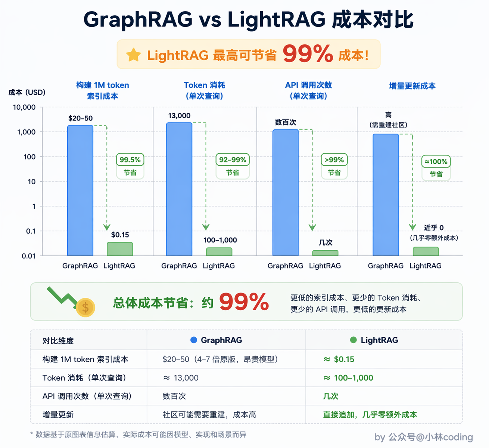
img
成本可能下降，但不要把论文/基准中的百分比当作通用承诺；应按目标语料、模型和更新策略重新测量。
LightRAG 的代价是什么？
当然，天下没有免费的午餐。LightRAG 牺牲了什么呢？
主要是牺牲了「全局深度洞察」。
GraphRAG 的社区摘要虽然贵，但它提供的是一种经过 LLM 加工过的、具有层次抽象的全局知识视图。对于那种需要深度宏观归纳的问题（比如「这本 500 页的小说整体想表达什么人生哲理？」），GraphRAG 的社区摘要能提供更好的全局洞察。
LightRAG 的双层检索虽然轻量，但本质还是基于查询去「现场拼凑」 全局视角，对极其复杂的全局归纳问题，深度可能不如 GraphRAG。
所以两者的权衡其实很清楚。如果你追求的是极致的全局深度洞察，而且预算管够，那 GraphRAG 是你的选择；反过来，如果你更在意的是成本可控、增量友好、实时性好，愿意在全局洞察深度上打个折扣，那 LightRAG 就更合适。
好，到这儿你应该已经对 LightRAG 有了一个整体印象。但它的双层检索具体是怎么工作的？它的增量算法在实现层面是怎么做到「零额外成本」的？下一章咱们就来扒一扒 LightRAG 的完整工作流程。
7、LightRAG 的工作原理是怎样的？
这一章用一个常见实现说明 LightRAG 的索引、查询和增量路径；它是否比 GraphRAG 便宜或更快，要在相同数据、模型和 SLO 下测量。
和 GraphRAG 一样，LightRAG 也分为索引阶段（构建知识图谱）和查询阶段（双层检索+生成）两大环节。但它的实现细节和 GraphRAG 有很大差异，咱们一步步拆。
索引阶段：轻量化的图构建
下面按三类步骤讲解一种实现；代码版本可能增加解析、缓存、索引迁移或校验阶段。
第 1 步：文档切块（Chunking）
和 GraphRAG 类似，LightRAG 先把文档切块；块大小和重叠是配置项，应按 tokenizer、文档结构、召回和抽取质量评测。
第 2 步：实体和关系提取（Entity & Relationship Extraction）
LightRAG 会用 LLM 从每个文本块里抽实体和关系。每个实体会带上自己的名称、类型（比如是人物、组织还是地点）和一段综合描述；每条关系除了源实体、目标实体、关系描述之外，还会额外生成一个东西，叫「关系关键词」。
这个「关系关键词」是 LightRAG 的一个小巧思，你可以先记着。它描述的是这条关系所代表的主题或概念，比如「张三创立 A 公司」这条关系，对应的关键词可能就是「创业、企业创立」。
为什么要多生成一个关键词呢？这里先埋个伏笔，等到讲查询阶段的双层检索，你自然会明白这个关键词就是后面「高层检索」去命中相关关系的钥匙。
第 3 步：键值对生成 + 去重（Key-Value Pair Generation & Deduplication）
这一步是 LightRAG 和 GraphRAG 最大的差别所在。
对于每个实体和关系，LightRAG 会生成一个键值对（Key-Value Pair）。所谓 Key，就是一个便于检索匹配的短语，比如实体名或者关系关键词；而 Value 呢，就是一段详细的描述信息，留着后面组装上下文用。
键值对便于把检索键与可读描述关联起来，但实际实现仍可能结合向量/关键词索引、图邻居和原文 chunk；不能说完全省掉嵌入匹配或遍历。
去重/合并也可能发生在这一步，但合并规则由实现决定；同名不一定同实体，异名也可能同实体，必须保留来源和冲突信息。下面的重复次数只是示例。
轻量去重可能更依赖名称或简单规范化，难以覆盖跨语言别名、同名异人和时间版本；多路召回有机会补回遗漏，但不能保证所有相似实体都会被检索到。高风险领域应增加实体链接、来源审查和冲突处理。
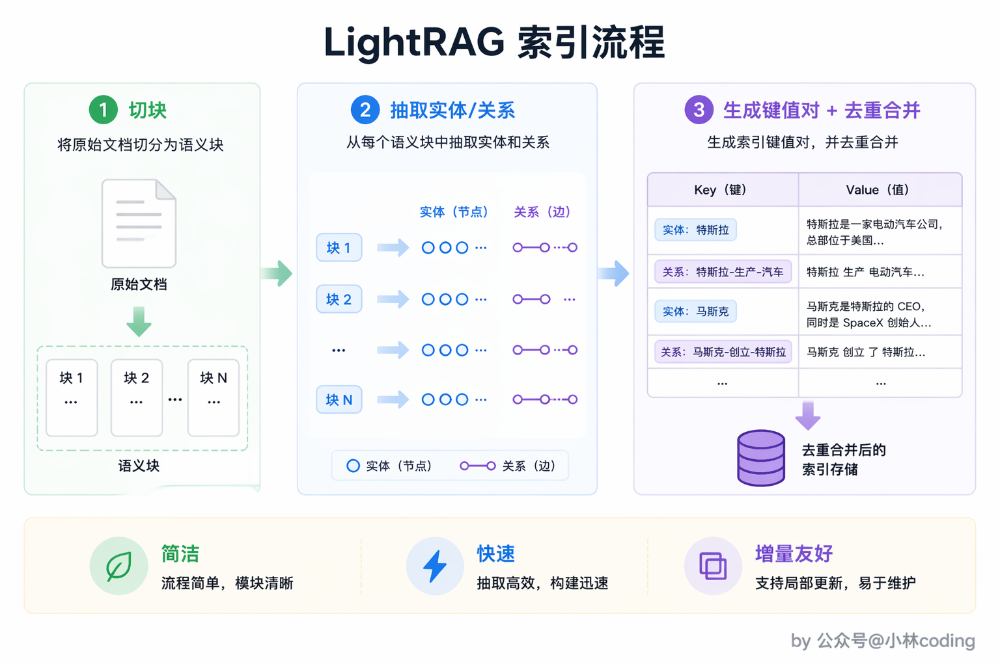
img
最终的存储结构：
索引后通常会同时保存图结构和检索索引；具体后端（例如内存图、关系库、图数据库、向量库）取决于实现和规模，生产选型要考虑并发、持久化、备份、租户隔离和删除。
与是否保存原文、实体、关系、社区和摘要相比，LightRAG 可能减少预计算结构，但实际系统仍应保留原文引用、索引元数据和可重建信息。
查询阶段：双层检索的精髓
索引搞定之后，查询阶段才是 LightRAG 真正的亮点。咱们一步步看。
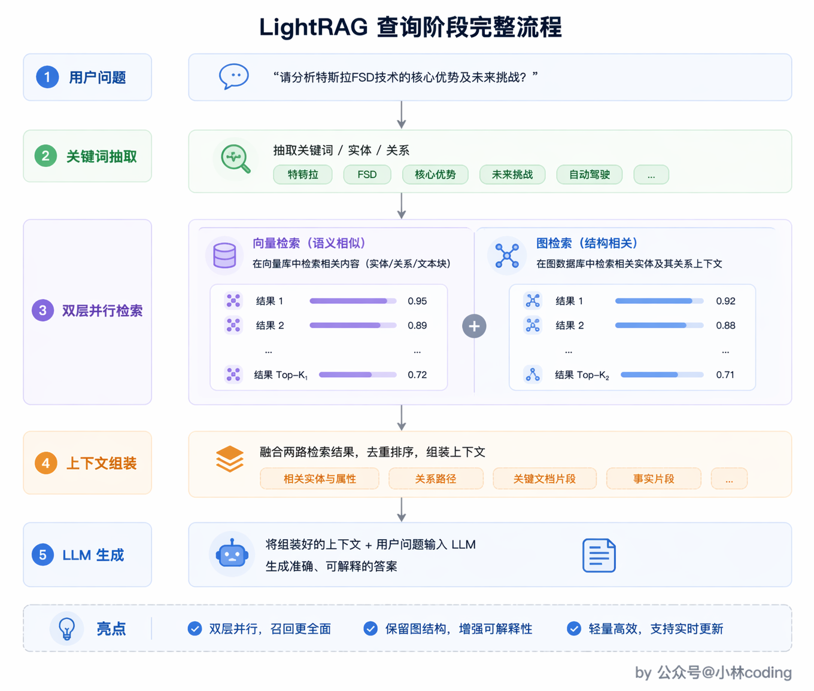
img
第 1 步：关键词抽取（Keyword Extraction）
一种常见实现会先用模型从问题中抽取两类关键词：低层关键词（Low-level Keywords）关注具体实体/术语，高层关键词（High-level Keywords）关注主题/概念；也可以用规则、查询改写或直接检索，调用次数不是协议要求。
举个 LightRAG 论文里的原生例子：
查询："国际贸易如何影响全球经济稳定？"
LLM 输出：
{
"high_level_keywords": ["国际贸易", "全球经济稳定", "经济影响"],
"low_level_keywords": ["贸易协定", "关税", "货币汇率", "进口", "出口"]
}
你看，高层关键词是抽象主题，低层关键词是具体对象。这个分层是整个双层检索的基础。
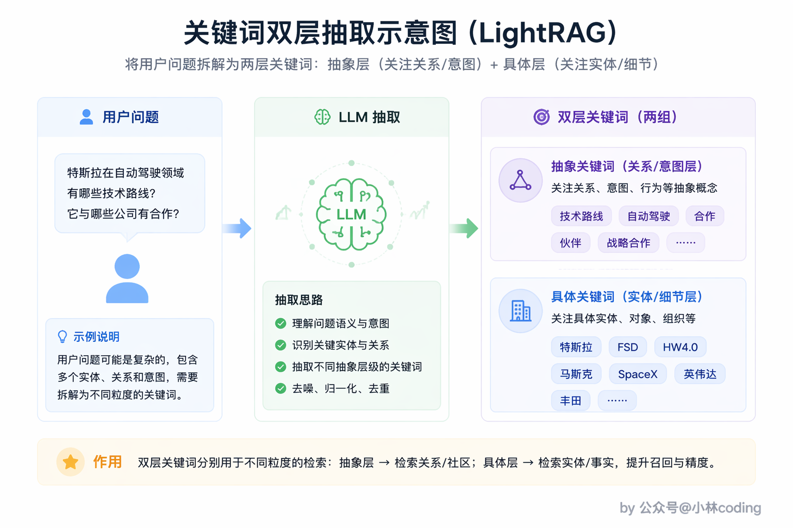
img
第 2 步：双层检索（Dual-Level Retrieval）
拿到两组关键词之后，LightRAG 会分别做两路检索：
Low-level 检索：用低层关键词去向量库里搜实体节点。比如用「贸易协定」「关税」这些关键词，找到相关的实体节点（可能是某个具体的贸易协定、某种税种等）。然后从这些入口实体出发，在图上扩展到它们的一跳邻居，收集相关的关系和描述。
High-level 检索：用高层关键词去向量库里搜关系边。比如用「国际贸易」「经济影响」这些关键词，找到相关的关系边（可能是「贸易协定 → 影响 → 国家经济」这类关系）。然后从这些关系出发，聚合它们涉及的实体和更高层的语义。
两路检索可以并行，也可以串行或由路由器选择；一路偏向实体，一路偏向关系只是理解模型。
第 3 步：上下文组装（Context Building）
把 Low-level 检索到的实体 + 邻居 + 相关文本块，和 High-level 检索到的关系 + 涉及实体 + 相关文本块拼在一起，组装成一段完整的上下文。
这里要控制上下文预算，4000 token 只是示例；应按目标模型窗口、证据覆盖率、输入成本和输出质量配置，并对租户/权限做过滤。
第 4 步：LLM 生成答案
把组装好的上下文和原始用户问题一起喂给 LLM，生成最终答案。
四种查询模式：灵活应对不同场景
一些实现提供 Naive、Local、Global、Hybrid 等查询模式；名称、默认值和具体检索路径取决于版本：
| 模式 | 用什么检索 | 适用场景 |
|---|---|---|
| Naive（朴素） | 纯向量检索文本块（就是传统 RAG） | 简单事实问答，不需要关系推理 |
| Local（本地） | 只用 Low-level 检索（找具体实体） | 具体实体类问题，比如「这个 API 怎么用」 |
| Global（全局） | 只用 High-level 检索（找关系主题） | 抽象概念、主题归纳类问题 |
| Hybrid（混合） | Low-level + High-level 同时用 | 复杂综合问题，默认推荐 |
Hybrid 可以作为候选起点，但应和 Naive/Local/Global 以及业务基线在同一评测集上比较。
增量更新：真正的「轻量友好」
前面我们反复提到 LightRAG 的增量更新很好，具体好在哪？咱们看看它的增量算法做了什么：
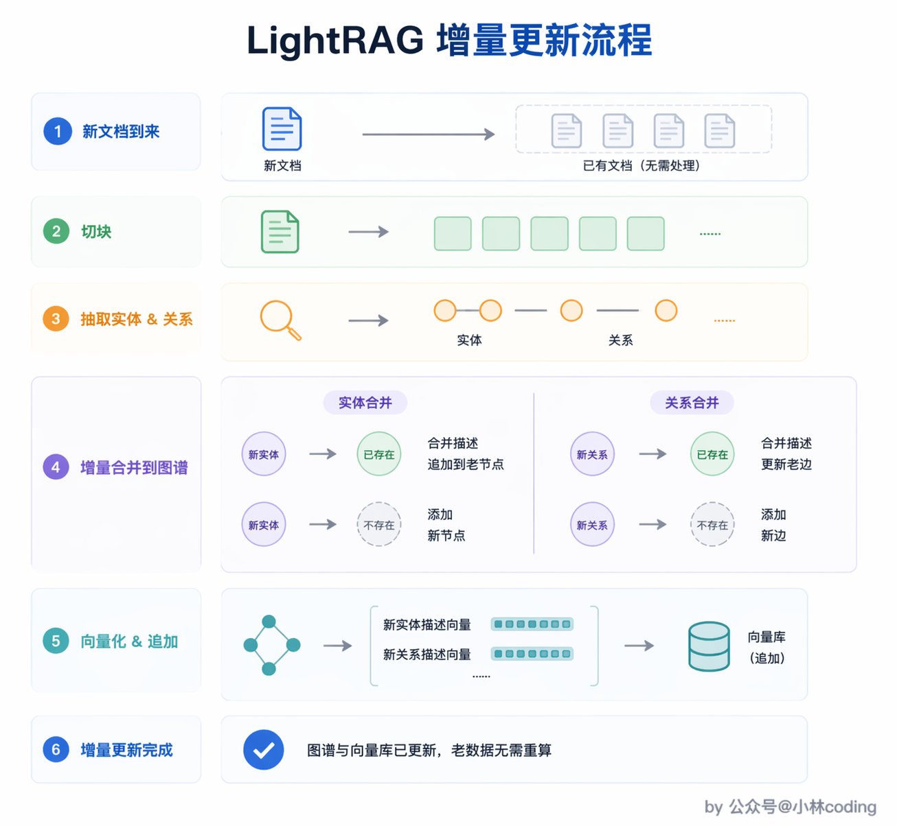
img
它的流程其实非常简单。
- 新文档来了，先切块，然后抽实体和关系，这一步只针对新文档，老文档完全不用再碰。
- 接着就是增量合并：如果抽出来的实体名字在已有图谱里能找到同名节点，就把新的描述追加或者合并到那个老节点上去；如果是全新的实体，那就添加一个新节点。关系的处理逻辑也一样，已有关系就合并描述，新关系就加条新边。
- 最后一步，把新的实体、关系描述做一下向量化，追加到向量库里。就这样，整个增量过程就完成了。
如果该实现不使用社区层，就不需要重建社区摘要；但增量仍可能触发实体合并、向量更新、删除、关系冲突和索引一致性检查。
因此它可能比需要社区重建的 pipeline 更易增量维护，但成本不会是零，必须按新文档规模、抽取调用和存储更新测量。
一个细节值得提一下：LightRAG 目前的增量处理对「语义冲突」并不敏感。比如 Day 1 抽到了「GPT-5.1 是 OpenAI 最新模型」，Day 2 又抽到「GPT-5.2 是 OpenAI 最新模型」，LightRAG 会把两条关系同时保留，不会自动判定哪条更新。如果你的业务需要处理这种时效性冲突，得自己在上层加逻辑。
一张图总结 LightRAG 的完整工作原理
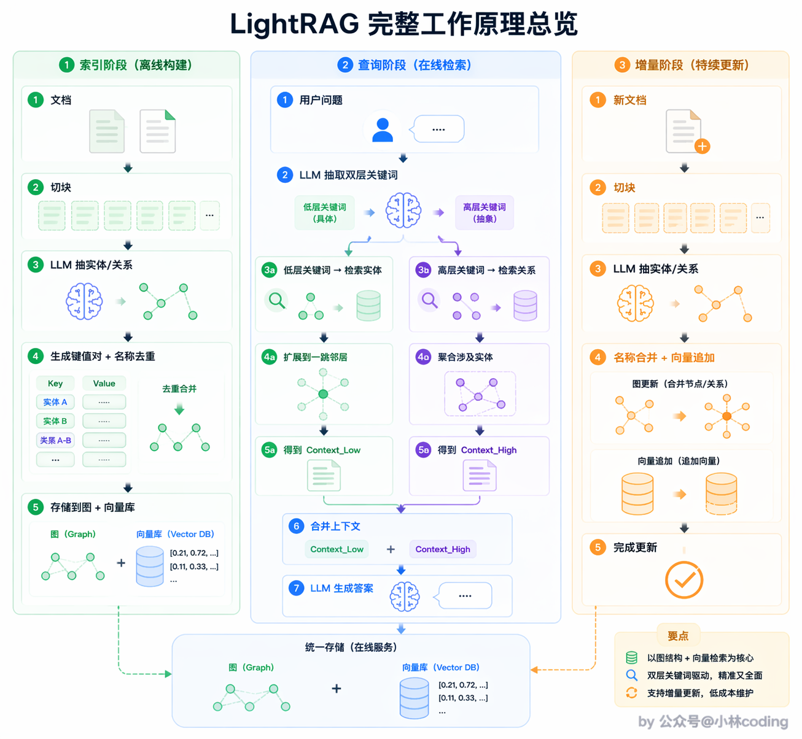
img
索引阶段：
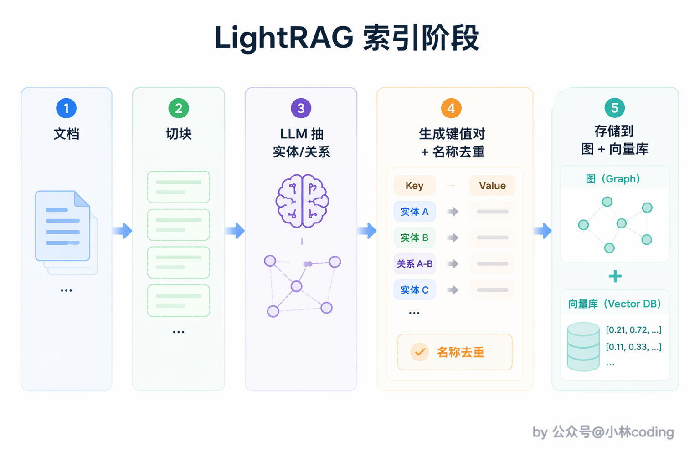
img
查询阶段（Hybrid 模式）：
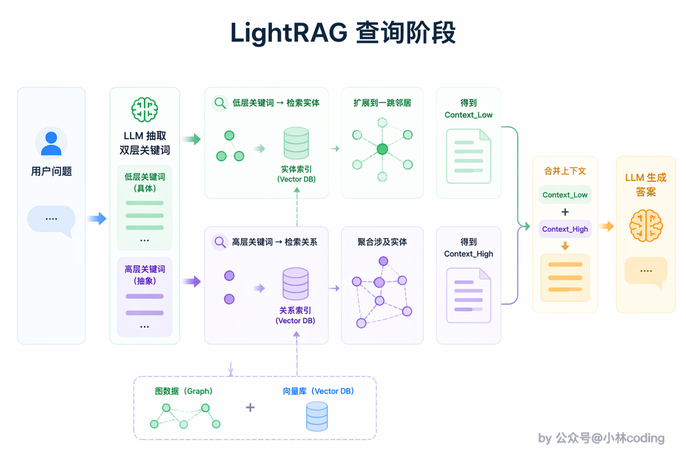
img
增量阶段：
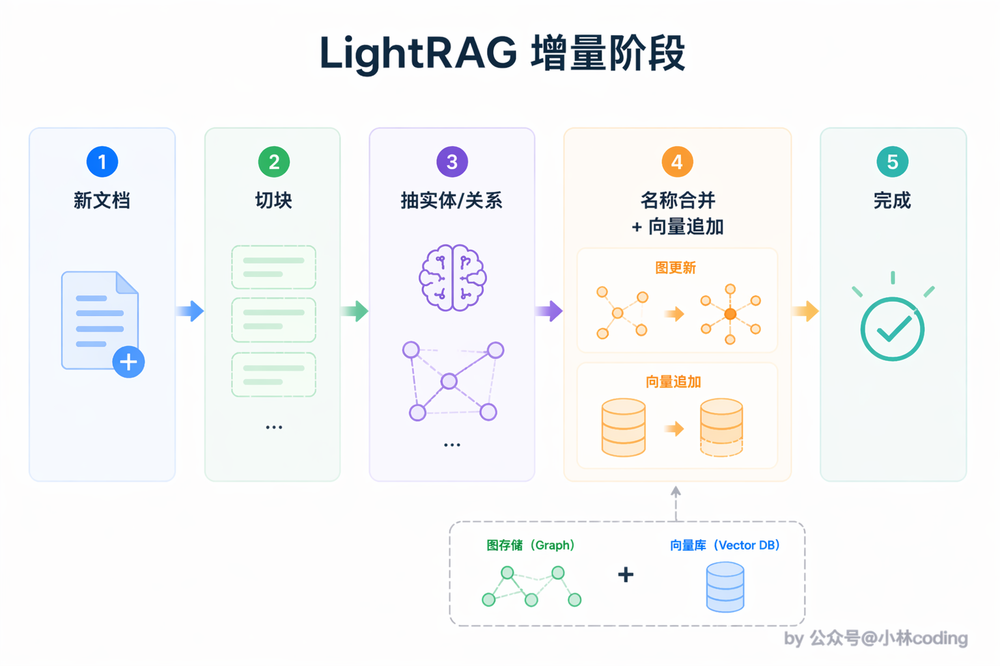
img
到这儿你应该已经把 LightRAG 的工作原理搞清楚了。它整体比 GraphRAG 简洁得多，核心就是用「双层检索」替代了 GraphRAG 昂贵的「社区摘要」，用「名称去重」替代了复杂的实体消歧。
讲到这儿，两个技术的原理都讲完了，接下来咱们就该做一次完整的对比，看看这两者到底有哪些差异。
8、LightRAG 和 GraphRAG 有什么区别？
前面几章咱们分别拆解了 GraphRAG 和 LightRAG 的设计哲学、工作原理和核心创新。这一节，咱们来做一次系统性对比，把两者的差异说透。
我分几个维度一个一个看。
维度一：设计哲学上的分歧
GraphRAG 的哲学是「预计算全局视角」，在索引阶段就通过社区检测和社区摘要，把数据集的全局结构「嚼碎了」给你准备好。查询时直接拿现成的摘要用。
LightRAG 的哲学是「按需检索，延迟聚合」，索引阶段只做最核心的实体关系抽取，不做全局预计算。查询时通过双层关键词临时拼凑出局部和全局视角。
打个比方：GraphRAG 像一个很勤快的图书管理员，在你进图书馆之前已经把每个主题区都写好了概览海报。LightRAG 像一个聪明的助手，你告诉他你想了解什么，他现场帮你把相关的书和书之间的关系梳理出来。
各有取舍：前者可能把更多计算放在索引期，后者可能把更多聚合放在查询期；查询速度、全局深度和维护成本必须通过基准测试验证。
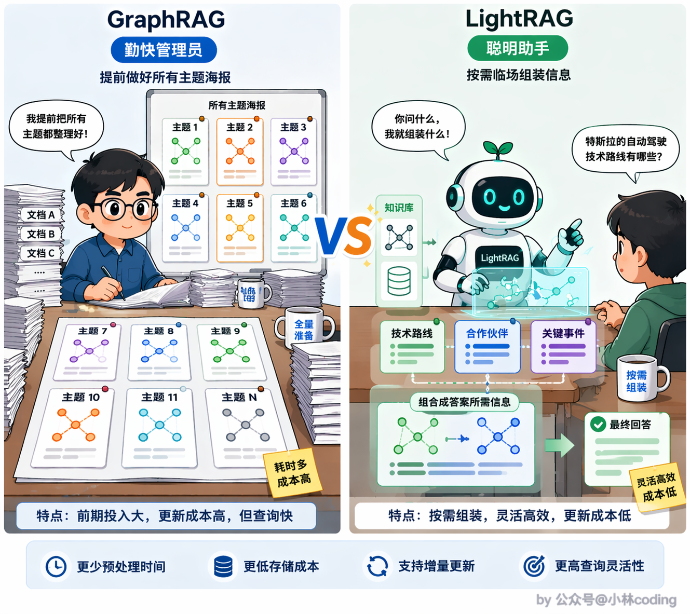
img
维度二：索引阶段的差异
| 步骤 | GraphRAG | LightRAG |
|---|---|---|
| 文档切块 | ✅ 一样 | ✅ 一样 |
| LLM 抽实体关系 | ✅ 一样 | ✅ 一样 |
| 实体/关系摘要 | ✅ 每个实体/关系都要调 LLM 合成综合描述 | ✅ 有，但更轻（直接 merge） |
| 社区检测（Leiden） | 常见实现使用 | 可能不使用预计算社区 |
| 社区摘要生成 | 可选/常见索引资产 | 通常减少或不预计算 |
| 实体消歧 | 需要复杂策略（字符串 + 向量 + LLM 判别） | 朴素名称匹配，同名合并 |
某些 LightRAG pipeline 会省掉或延迟这两个环节；成本优势不是固定 1% 或更低，需在相同模型、数据、缓存和质量阈值下比较。
维度三：查询阶段的差异
先看 GraphRAG 的查询。如果你用的是 Local Search，它会先用向量找到入口实体，然后沿着图遍历扩展，最后组装上下文；如果是 Global Search，则是 Map-Reduce 式地遍历所有相关社区的摘要，每个社区生成中间答案，再汇总。
再看 LightRAG 的查询（Hybrid 模式）。一上来先用一次 LLM 把问题拆成双层关键词；低层关键词拿去检索实体，扩展到一跳邻居；高层关键词拿去检索关系，聚合涉及的实体；两路最后合并，交给 LLM 生成答案。
最大的差别在计算位置与检索对象：GraphRAG 的 Global Search 可能聚合多个社区报告，LightRAG 的 Hybrid 可能检索实体/关系表示并现场组装；延迟是否低一个数量级不能脱离数据和实现断言。
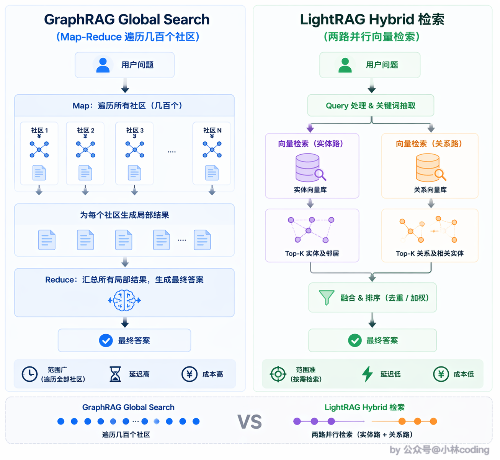
img
维度四：增量更新能力
| 场景 | GraphRAG | LightRAG |
|---|---|---|
| 新增一份文档 | 可能触发社区重划、摘要重建、向量更新（级联复杂） | 只需抽实体关系 + 名称合并 + 向量追加 |
| 删除一份文档 | 同样会触发级联影响 | 删除对应节点和边即可 |
| 大批量更新 | 通常需要定期全量重建 | 直接增量，不用重建 |
| 时效性冲突处理 | 依赖复杂的版本化和重建策略 | 目前能力较弱，会同时保留冲突信息 |
LightRAG 在部分增量场景中可能更容易维护，但优势要结合实体链接、删除、冲突和质量评测判断。
但要注意，时效性冲突处理这一点 LightRAG 反而是短板，如果你的业务场景里有很多「过时被替代」的信息（比如新版产品替换老版），得在上层加逻辑。
维度五：成本与性能对比
论文/社区基准中的数字受模型、价格、语料、硬件、缓存和实现版本影响，不能直接当作生产报价。建议用同一数据集建立如下测量表：
| 指标 | GraphRAG 需要关注 | LightRAG 需要关注 |
|---|---|---|
| 索引成本 | 抽取、实体/关系聚合、社区和摘要的模型/存储成本 | 抽取、关键词/关系表示和索引成本 |
| 查询成本 | Local/Global 的候选数、批次、Reduce 和输出 | 关键词抽取、实体/关系召回、上下文和输出 |
| 查询延迟 | p50/p95、扇出并发、限流和缓存命中 | p50/p95、两路召回、图扩展和重排 |
| 增量成本 | 受影响子图、社区/摘要重建和索引一致性 | 实体合并、冲突、删除和索引更新 |
| 质量 | 多跳召回、全局归纳、证据覆盖、事实性 | 实体/关系召回、主题归纳、事实性 |
维度六：精度表现（效果谁更好？）
很多人会问：LightRAG 这么便宜，精度是不是不行？
不能只用“便宜”推出“精度不行”或“精度更好”。论文中的数据集、指标、基线和提示配置需要逐项复核；基准胜负不保证迁移到企业语料。应在自己的问题分布上比较召回、证据支持、事实性、延迟和成本。
但咱们也得客观看问题。在需要极深度全局归纳的场景下，比如「这本书的终极主题思想是什么」这种问题，GraphRAG 的社区摘要仍然是有优势的；在实体消歧要求严格的场景下（像金融合同、医疗诊断这类容错率极低的业务），GraphRAG 那套复杂的消歧策略也更靠谱。
一张大表总结所有差异
最后，咱们用一张表把所有维度的对比汇总起来，方便你收藏：
| 对比维度 | GraphRAG 类方案 | LightRAG 类方案 |
|---|---|---|
| 核心思路 | 可预计算社区/摘要，支持局部与全局路径 | 减少预计算，按实体/关系/关键词检索并现场组装 |
| 查询路径 | 可能包含 Local、Global、混合或动态路径 | 常见实现包含 Naive、Local、Global、Hybrid 等 |
| 成本位置 | 较多成本在索引与摘要，也可能有较重全局查询 | 较多成本在抽取与在线召回/组装，具体取决于实现 |
| 增量更新 | 需处理实体、社区/摘要和索引依赖 | 需处理实体合并、冲突、删除和索引更新 |
| 全局归纳 | 预计算摘要可能提供层次化证据 | 现场聚合更灵活，但证据覆盖需评测 |
| 实体消歧 | 可使用多层策略，但成本更高 | 轻量实现可能更依赖名称/简单规范化 |
| 适合的候选场景 | 全局主题、关系遍历且能接受索引维护 | 需要较轻增量路径、成本敏感且能接受在线聚合 |
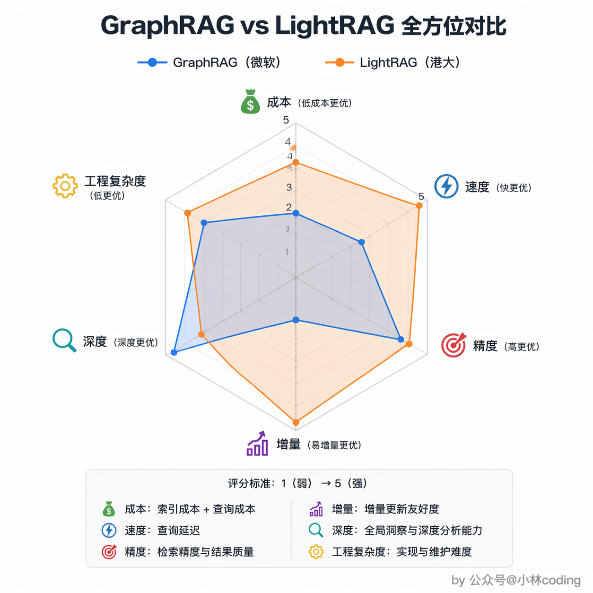
img
看完这张对比表，你应该已经对两者的差异心里有数了。但光知道差异还不够，真正关键的是：什么时候该选哪个？
接下来两节，咱们就专门聊 GraphRAG 和 LightRAG 各自的适用场景。
9、什么场景下需要 GraphRAG？
搞清楚了差异，咱们来聊聊哪些场景真的值得上 GraphRAG。
这个问题很重要，因为 GraphRAG 往往增加索引、存储和查询链路。如果业务场景用传统 RAG 或 LightRAG 已经达到目标，额外复杂度就未必能换来相应收益；应先用同一评测集核算一次性索引成本、更新成本和查询成本。
什么场景真的值得？ 我总结下来大概有这么几类。
场景一：需要「全局洞察」的深度内容分析
这是 GraphRAG 最核心的主场。典型场景包括：
- 长篇文学作品的主题分析。比如你要让 AI 分析一部长篇小说整体想表达什么、角色之间的关系网络和不同社会阶层的冲突模式。这种问题通常需要跨章节覆盖和全局归纳；社区摘要可能提供一种组织证据的路径，但仍应回链原文并检查摘要遗漏。
- 多篇研究报告的综述。例如梳理某个行业多年来的发展脉络或多份白皮书的观点演进。传统 RAG 可能需要查询分解和多轮检索，GraphRAG 则可以用社区或主题摘要组织宏观答案；最终效果取决于语料、抽取质量和评测设计。
- 大规模专利 / 学术论文分析。比如医药公司想知道「过去五年某个疾病领域的研究热点是怎么演进的」，这需要在数万篇论文上做主题发现和演进追踪，GraphRAG 的层次化社区结构能很好地支持。
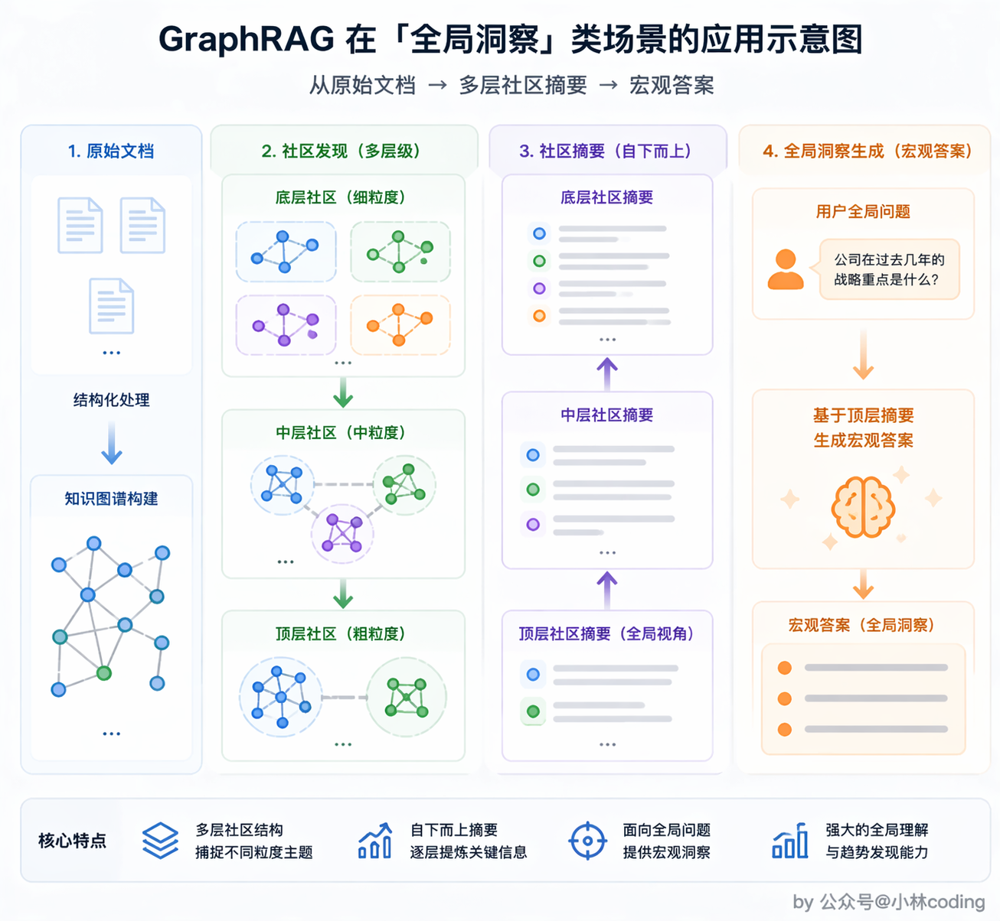
img
场景二：跨文档多跳推理的高价值场景
这类场景的共同点是：回答一个问题需要跨多个文档做关系推理，而且答错了代价很大。
- 合规与审计追踪。例如关联客户、公司、监管记录和信贷档案。图结构有助于表达关系，但是否能“完整走通”取决于实体匹配、时间条件、权限过滤和来源校验；不能把单篇论文或官方基准的提升幅度直接当作生产保证。
- 医疗诊断辅助。这类问题需要准确追溯疾病、药物和禁忌症的关系。图式表示可能帮助组织证据，但不能自动避免因果、否定或适用人群错误；高风险场景仍需要权威来源、人工审查和明确的拒答边界。
- 法律案例检索。案件、判决、法规和判例引用天然具有多层关系，图结构可用于组织检索路径；是否优于带引用的传统 RAG，要以管辖区、时间有效性和证据覆盖评测。
- 金融研报深度分析。跨实体、跨时间、跨文档的关联推理可能受益于图索引，但不是只有 GraphRAG 才能完成，也可以比较查询分解、结构化数据库和规则查询等方案。
场景三：数据相对静态、更新不频繁的知识库
因为 GraphRAG 的增量更新成本高，它最适合那些建好之后长期服务的静态知识库。像企业内部的规章制度库、历史档案、法律条文库、已经归档的项目资料、公司的年度研究报告集，这类东西几个月甚至一年才更新一次。
你想想，如果你的数据一年只更新一两次，那花一笔钱建好索引，之后的查询收益是长期的，这笔成本就能慢慢摊薄。
场景四：对精度和可解释性要求极高的场景
GraphRAG 还有一个容易被忽略的潜在优势：更容易组织可追溯证据。
如果节点、边和摘要都保存了来源、版本、时间和抽取过程，它就有机会把答案追溯到实体、关系和原始文本块。这对于需要审计追踪的场景非常关键，但“显式图结构”本身不等于可审计。
比如金融合规，每个决策都必须有据可查；医疗诊断，每个回答都要有明确的医学证据支撑；法律咨询里，每条建议都要能对应到具体的法条或判例；政府政务更不用说，每个答案都必须能追溯回具体的政策文件。
如果 AI 系统回答合规问题却无法追溯证据链，就很难满足高风险场景的审计要求。GraphRAG 的「节点-边-社区」结构可以作为审计索引，但仍需配套来源绑定、访问控制、版本管理、人工复核和输出引用。
什么场景下不要上 GraphRAG？
反过来，哪些场景千万不要为了「赶时髦」上 GraphRAG 呢？
如果语料规模较小、问题以单跳事实为主，先用传统 RAG、结构化查询或规则系统建立基线通常更稳妥；如果数据频繁更新、查询有严格实时 SLO 或预算受限，也要先测量增量维护与端到端延迟，再决定是否引入全局摘要。这里没有适用于所有项目的 token 阈值。
一句话总结：GraphRAG 更适合被当作一种面向跨文档关系和全局归纳的候选架构。它可能更复杂、更贵，也可能改善证据组织；是否值得使用，要与传统 RAG、结构化查询和其他图式方案在同一数据与 SLO 下比较。
那么LightRAG 适合的场景又是什么呢？下一节继续聊。
10、什么场景下需要 LightRAG？
讲完 GraphRAG 的场景，咱们来聊 LightRAG。LightRAG 的定位其实可以用一句话概括：
它适合那些「想吃图 RAG 的红利，但又扛不住 GraphRAG 的成本和维护负担」的场景。
具体有哪些？咱们分类看。
场景一：数据频繁更新的业务
这是 LightRAG 类方案可能有吸引力的场景：数据需要持续增量更新，同时又希望保留实体/关系检索。但不能只凭“增量友好”做决定，还要检查删除、冲突、实体链接和版本化能力。
- 企业知识库的日常维护。产品发布说明、客户反馈、项目总结和技术方案持续进入时，带社区摘要的 pipeline 可能需要处理受影响的社区和摘要；LightRAG 类方案可以减少部分预计算，但仍需要解析、抽取、索引更新和质量校验。
- 新闻聚合和实时资讯。高频更新的新闻系统可以比较“增量可写入”与“查询新鲜度”的权衡；能否达到分钟级或更低延迟，取决于模型服务、队列、索引和发布策略，不能由框架名称保证。
- 客户支持系统。CRM 系统每天都有新的工单、投诉、解决方案记录。LightRAG 的增量友好特性可以让这类动态知识库长期保持新鲜。
- 持续更新的技术文档。比如 GitHub 开源项目的文档、API 文档、内部技术 wiki，这些东西几乎每天都在变。LightRAG 的「追加式增量」设计就是为这种场景量身定制的。
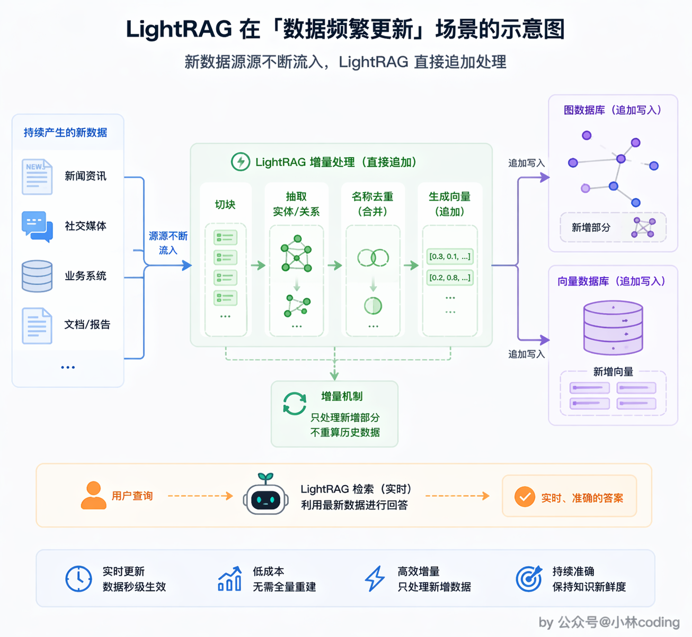
img
场景二：成本敏感的中小团队和初创公司
一句话：预算紧张、但又想探索图式 RAG 时，可以把 LightRAG 类方案作为候选。
创业公司或小团队应先用真实语料测量解析、抽取、嵌入、存储和查询成本；LightRAG 类方案可能减少部分预计算，但不会自动消除模型调用和运维成本。
- 个人知识管理。有些技术爱好者想把自己的读书笔记、博客收藏、会议记录都做成一个 AI 助手，查询时能引经据典。GraphRAG 成本太高，LightRAG 很合适。
- 教育和学习场景。老师想把讲义、习题和参考资料做成一个 AI 问答助手。使用本地模型可以减少外部 API 费用，但会转化为本地算力、部署、更新和监控成本；是否适合要按模型质量与硬件测量。
- SaaS 产品的知识库功能。如果你做 SaaS，想给每个客户都开一个独立的知识库，GraphRAG 的成本会随着客户数线性放大。LightRAG 的低成本让多租户知识库变得可行。
场景三：实时性要求高的 C 端应用
LightRAG 类方案的查询链路可能比带全局社区聚合的方案短，但端到端延迟仍由关键词生成、检索、图扩展、上下文组装、模型首 token 和负载共同决定，应以 p50/p95 和交互 SLO 判断。
- 客服聊天机器人。用户希望快速看到首个响应，因此应比较不同查询路径的首 token、完整答案延迟和证据质量；不能把固定秒数作为 LightRAG 的承诺。
- 智能客户助手 / AI 助理。比如你做一个编程助手，用户问「我上次写的那个项目用了什么数据库？」，你希望它能立刻从项目历史记录里找到答案。LightRAG 的双层检索在秒级返回，不会拖累交互节奏。
- 语音交互场景。语音应用通常更重视首包、分段输出和端到端交互 SLO；图式检索是否适合，取决于是否能在该 SLO 内完成检索、证据校验和流式生成。
场景四：轻量部署、本地化环境
LightRAG 类方案的资源需求取决于嵌入模型、生成模型、图/向量存储和并发；在小规模、本地模型或量化配置下，CPU-only 可能可行，但不是框架的普遍保证。
- 边缘设备部署。比如把 RAG 系统部署到工厂车间的边缘盒子里，帮工人查技术手册。LightRAG 的低资源消耗让这种部署成为可能。
- 私有化内网部署。对数据隐私要求高的行业可以考虑本地模型和内网索引，但还要审查遥测、依赖下载、日志、模型更新和出网策略；“不出内网”是部署与网络控制结果，不由 RAG 框架单独保证。
- 本地个人 AI 助手。用 Ollama 跑本地大模型，配合 LightRAG，普通笔记本就能跑起来一个可用的知识库问答系统。
场景五：中小规模知识库
从数据规模看：
| 语料规模 | 推荐方案 |
|---|---|
| 语料规模与问题类型 | 选型建议 |
| --- | --- |
| 小规模、单跳事实为主 | 先用传统 RAG/结构化查询建立基线 |
| 中等规模、需要实体/关系检索且更新频繁 | 评估 LightRAG 类增量路径，同时测删除、冲突和证据质量 |
| 大规模、跨文档关系或全局归纳明显 | 比较 GraphRAG 类社区摘要、LightRAG 类按需检索和查询分解 |
| 任意规模但高风险/强实时 | 先以证据支持率、审计要求、p95 和成本作为硬约束 |
中小规模可能是 LightRAG 类方案的试验区间，但不能只凭 token 数选择；问题分布、更新模式、模型质量和审计要求同样重要。
混合架构：两个都要，分而治之
还有一种越来越常见的做法，那就是混合架构。具体怎么搭呢？
对于那些稳定的、历史性的核心知识（比如公司规章、法规库），用 GraphRAG 建一次索引，做深度分析；对于动态的、日常变化的增量数据（比如工单、新闻、产品更新），就用 LightRAG 来做实时响应。然后在查询时再搭一个路由器（Query Router），根据查询的类型，把它分流到对应的系统里去。
这种混合架构的好处是能同时享受两者的优势，代价嘛，就是工程复杂度会上升。
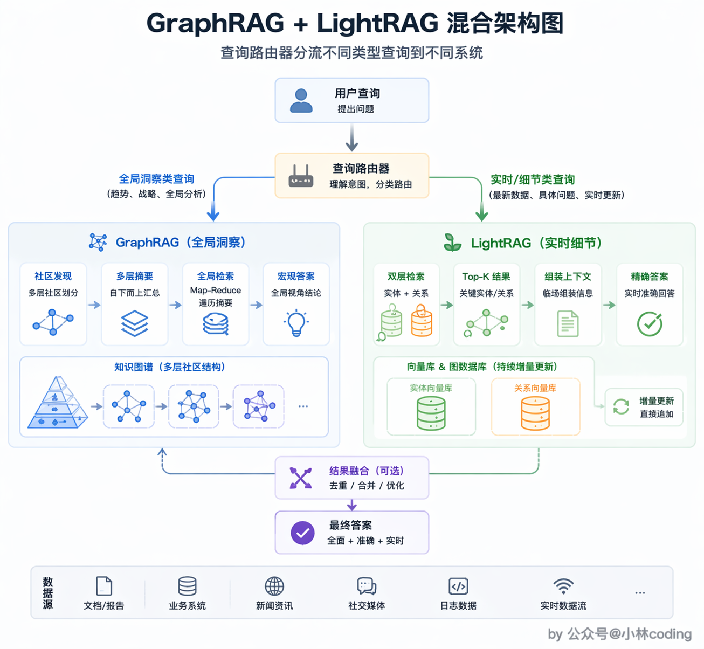
img
一句话总结
GraphRAG 是深度分析的重型武器，LightRAG 是日常使用的轻巧刀具。
一种可行的混合策略是：对稳定的历史知识评估带预计算摘要的方案，对动态数据评估增量友好的方案，再由查询路由器按问题类型分流。覆盖比例应由线上问题集统计，不能预设成固定的 80/20。
总结
咱们花了很长的篇幅，把 GraphRAG 和 LightRAG 这两个技术从痛点、原理、难点到场景都讲了一遍。最后用一张图把整个脉络串起来：
RAG 技术的演进线：
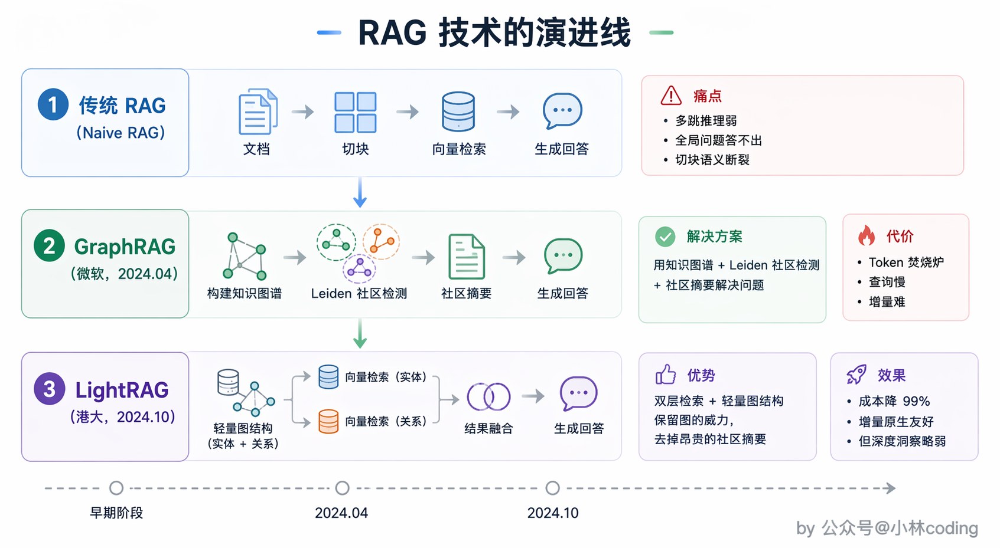
img
一张决策树帮你选型：
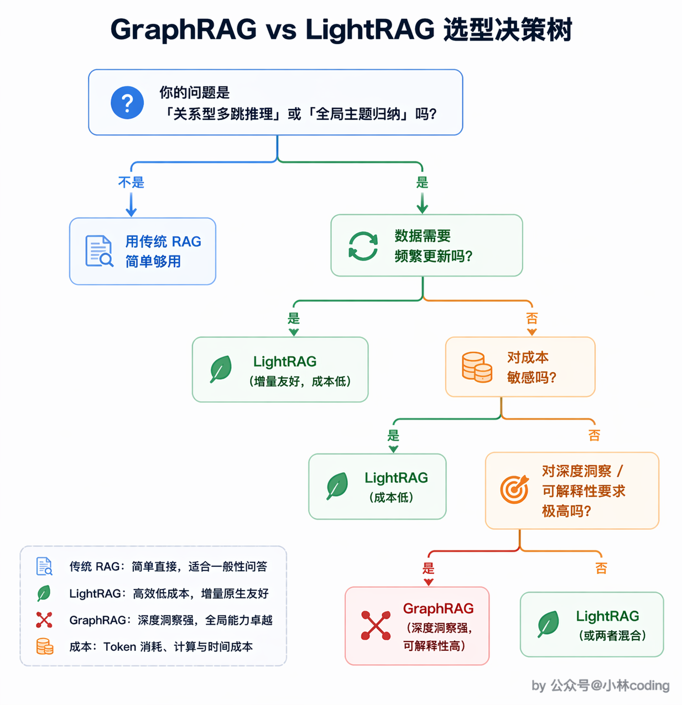
img
最后给一个务实的建议：
不要一上来就选 GraphRAG 这种「重型方案」。先用传统 RAG 搭个 MVP，跑一段时间看看用户到底在问什么类型的问题。如果发现大量问题涉及跨文档关系、全局主题，再考虑升级到 LightRAG。如果 LightRAG 也搞不定你那部分高精度、深度分析的需求，才需要上 GraphRAG。
RAG 技术的发展，本质上是在「精度」「成本」「速度」「维护」之间不断做权衡。没有银弹，只有最适合你业务场景的方案。
希望这篇文章能帮你理清 GraphRAG 和 LightRAG 到底是什么、怎么选。
觉得这篇文章对你有帮助，欢迎点赞、转发支持一下。
我们下次见！